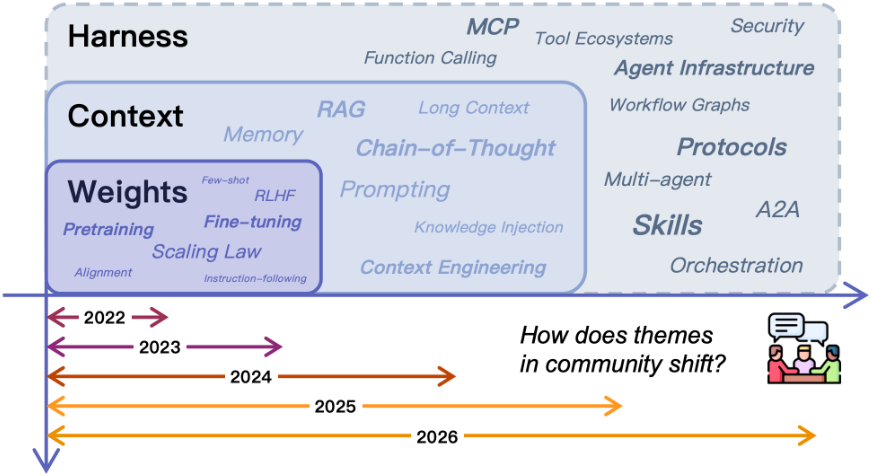
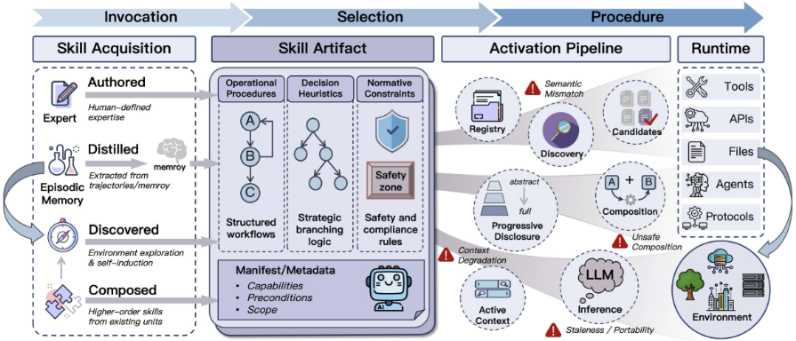
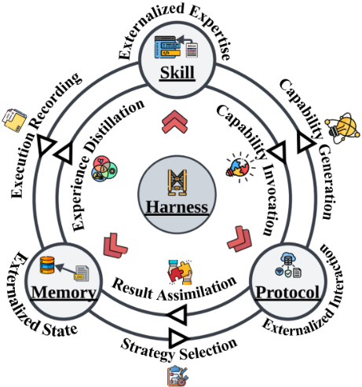

Externalization in LLM Agents: A Unified Review of Memory, Skills, Protocols and Harness Engineering
LLM Agent 中的外化（Externalization）：Memory、Skills、Protocols 与 Harness 工程的统一综述
简介
这篇综述提出'外化'是理解 LLM Agent 近年进展的统一框架：能力正从修改模型权重转向重组模型周边的运行时基础设施。论文借用 Norman 的认知工件（cognitive artifacts）理论，将 Agent 基础设施归纳为三个外化维度——Memory 外化跨时间的状态、Skills 外化程序性专长、Protocols 外化交互结构，并由 Harness 作为统一层协调三者，梳理了从 weights 到 context 到 harness 的演进脉络。文章系统综述了记忆架构（从 monolithic context 到检索存储、分层编排与自适应记忆）、技能生命周期（规范、发现、渐进式披露、执行绑定、组合）与协议家族（MCP、A2A、ACP、AG-UI 等），并提炼出 harness 设计的六个分析维度：agent loop 与控制流、沙箱隔离、人工审批门、可观测性、配置与策略编码、上下文预算管理。核心结论是：可靠性收益主要来自把认知负担转化为模型更易解决的任务表示，而非单纯更强的模型；同时指出认知开销、安全风险与评测缺口是外化路线的主要挑战。
问题
现有综述多按组件孤立梳理（RAG、工具学习、Agent 架构、协议互操作），缺乏统一框架解释为什么记忆、技能、协议、harness 这些发展方向正在趋同，以及为什么实际 Agent 系统的可靠性收益主要来自模型周边基础设施而非模型本身。论文试图用'外化'作为转换逻辑（transition logic）统一解释这一转变，并给出 harness 工程的系统级分析框架。
方法
以 Norman 认知工件理论与分布式认知为概念基础，将 Agent 基础设施分解为三个外化维度并逐一分析：Memory（工作上下文/情景经验/语义知识/个性化记忆四类状态，monolithic context、检索存储、分层编排、自适应系统四种架构范式）；Skills（操作程序、决策启发式、规范约束三要素，规范-发现-渐进式披露-执行绑定-组合的外化流程，authored/distilled/discovered/composed 四种获取路径）；Protocols（调用语法、生命周期语义、权限信任边界、发现元数据四个维度，agent-tool/agent-agent/agent-user/垂直域四类协议）。在此基础上提出 Harness 工程的六个分析维度（agent loop 与控制流、沙箱与执行隔离、人工监督与审批门、可观测性与结构化反馈、配置与策略编码、上下文预算管理），并分析模块间六种耦合流与参数化/外化能力的权衡空间（更新频率、可复用性、可审计性、延迟与上下文负担）。
关键结果
未在论文中说明
创新点
与既有组件级综述不同，本文不按组件孤立梳理，而是用'外化/认知工件'这一统一概念解释记忆、技能、协议为何趋同，并把 harness 工程确立为整合性学科，给出六维分析框架与模块耦合图；最接近的概念桥梁是 CoALA，但本文进一步给出 weights→context→harness 的演进逻辑、参数化与外化能力的划分标准，以及衡量外化质量的评测议程（消融、跨模型迁移、长程可靠性、上下文效率、治理质量）。
团队参考意义
相关度级别：high
命中能力域：3.1 上下文工程与记忆 | 3.2 提示工程 | 3.3 Agent 架构与工具使用 | 3.4 多智能体协作 | 3.5 评测与可靠使用
理由：这篇综述几乎逐条覆盖团队的五个能力域：第 3 章的记忆分层与架构演进直接对应 3.1（上下文组织、RAG、记忆系统、上下文预算管理）；第 2.2 节对 prompting/CoT/ReAct/自动提示优化的梳理以及第 4 章把 SKILL.md/AGENTS.md 类指令文件作为可管理、可复用的提示资产，对应 3.2；第 4-6 章的技能系统、MCP 等工具协议、agent loop 与 harness 设计直接对应 3.3；agent-agent 协议（A2A/ACP/ANP）与子 Agent 编排对应 3.4；沙箱、审批门、可观测性、记忆投毒/技能注入等安全风险及第 8.6 节的评测议程对应 3.5。它为团队日常工作提供了统一词汇、设计维度清单和权衡分析框架，是少见的与团队职责范围全面重合的文献。
建议动作：深入精读并做内部分享
中文全文
arXiv:2604.08224v1 [cs.SE] 2026年4月9日
Externalization in LLM Agents: A Unified Review of Memory, Skills, Protocols and Harness Engineering
Chenyu Zhou 1 , Huacan Chai 1 , ∗ , Wenteng Chen 1 , ∗ , Zihan Guo 2 , 3 , ∗ , Rong Shan 1 , ∗ , Yuanyi Song 1 , ∗ , Tianyi Xu 1 , ∗ , Yingxuan Yang 1 , ∗ , Aofan Yu 1 , ∗ , Weiming Zhang 1 , ∗ , Congming Zheng 1 , ∗ , Jiachen Zhu 1 , ∗ , Zeyu Zheng 4 , Zhuosheng Zhang 1 , Xingyu Lou 5 , Changwang Zhang 5 , Zhihui Fu 5 , Jun Wang 5 , † , Weiwen Liu 1 , † , Jianghao Lin 1 , † , Weinan Zhang 1 , 3 , †
1 上海交通大学，2 中山大学，3 上海创智学院，4 卡内基梅隆大学，5 OPPO
∗ 同等贡献，† 通讯作者
Abstract
Contents
| 0 | 1 | 2 | 3 |
|---|---|---|---|
| 1 Introduction . . | 1 Introduction . . | . . . . . . . . . . . . . . . . . . . . . . . . . . . . | . . . . . . . . . . . . . . . . . . . 4 |
| 2 | Background: From Weights to Context to Harness | . . . . . . . . . . | . . . . . . . . . . . . . . . . . . . 7 |
| 2.1 | Capability in Weights . . . . . . . . . . . . . . . . . . . . . | . . . . . . . . . . . . . . . . . . . 8 | |
| 2.2 | Capability in Context . . . . . . . . . . . . . . | . . . . . . . . . . . . . . . . . . . 8 | |
| 2.3 | . . . . . . . Capability through Infrastructure . . . . . . . . . . . . . . . | . . . . . . . . . . . . . . . . . . . 10 | |
| 2.4 | Externalization as the Transition Logic . . . . . . . . . . . . | . . . . . . . . . . . . . . . . . . . 11 | |
| 3 | Externalized State: Memory . . . . . | . . . . . . . . . | . . . . . . . . . . . . . . . . . . . 11 |
| 3.1 | . . . . . . . What Is Externalized: The Content of State | . . . . . . . What Is Externalized: The Content of State | . . . . . . . . . . . . . . . . . . . 11 |
| 3.2 | . . . . . . . . . How It Is Externalized: Memory Architectures . . . . . . . | . . . . . . . . . How It Is Externalized: Memory Architectures . . . . . . . | . . . . . . . . . . . . . . . . . . . 13 |
| 3.2.1 | Monolithic Context . . . . . . . . . . . . . | . . . . . . . . . . . . . . . . . . . 13 | |
| 3.2.2 | . . . . . . Context with Retrieval Storage . . . . . . . . . . . | . . . . . . . . . . . . . . . . . . . 13 | |
| 3.2.3 | . Hierarchical Memory and Orchestration . . . . . . . | . . . . . . . . . . . . . . . . . . . 13 | |
| 3.2.4 | Adaptive Memory Systems . . . . . . . . . . . . . . | . . . . . . . . . . . . . . . . . . . 14 | |
| 3.3 | Memory Demands of the Harness Eras | . . . . . . . . . . . . | . . . . . . . . . . . . . . . . . . . 14 |
| 3.4 | Memory as Cognitive Artifact . . . | . . . . . . . . . . . . . . | . . . . . . . . . . . . . . . . . . . 15 |
| 4 4.1 | Externalized Expertise: Skills . . . . | . . . . . . . . . | . . . . . . . . . . . . . . . . . . . 16 |
| . . . . . . . . What is Externalized: Procedural Expertise | . . . . . . . . . | . . . . . . . . . . . . . . . . . . . 17 | |
| Operational Procedure . . . . . . . . . . . . . . . . . | . . . . . . . . . . . . . . . . . . . | ||
| 4.1.1 | Decision Heuristics . . . . . . . . . . . . . . . . . . . | 17 . . . . . . . . . . . . . . . . . . . 17 | |
| 4.1.2 4.1.3 | Normative Constraints . . . . . . . . . . . . . . . . | . . . . . . . . . . . . . . . . . . . 17 | |
| 4.2 | From | . Execution Primitives to Capability . . . . . | . . . . . . . . . . . . . . . . . . . 18 |
| 4.2.1 | Packages Stage 1: Atomic Execution Primitives . . . . . . . . | . . . . . . . . . . . . . . . . . . . 18 | |
| 4.2.2 | Stage 2: Large-scale Primitive Selection . . . . . . . | . . . . . . . . . . . . . . . . . . . 18 | |
| 4.2.3 | Stage 3: Skill as Packaged Expertise . . . . . . . . . | . . . . . . . . . . . . . . . . . . . 18 | |
| 4.3 | How | Skills Are Externalized . . . . . . . . . . . . . . . . . . | . . . . . . . . . . . . . . . . . . . 19 |
| 4.3.1 | Specification . . . . . . . . . . . . . . . . . . . . . . | . . . . . . . . . . . . . . . . . . . 19 | |
| 4.3.2 | Discovery . . . . . . . . . . . . . . . . . . . . . . . . | . . . . . . . . . . . . . . . . . . . 19 | |
| 4.3.3 | Progressive Disclosure . . . . . . . . . . . . . . . . . | . . . . . . . . . . . . . . . . . . . 19 | |
| 4.3.4 | Execution Binding . . . . . . . . . . . . . . . . . . . | . . . . . . . . . . . . . . . . . . . 20 | |
| 4.3.5 | Composition . . . . . . . . . . . . . . . . . . . . . . | . . . . . . . . . . . . . . . . . . . 20 | |
| 4.4 | Skill Acquisition and Evolution . . | . . . . . . . . . . . . . . | . . . . . . . . . . . . . . . . . . . 21 |
| 4.5 | Boundary Conditions . | . . . . . . . . . . . . . . . . . . . . . | . . . . . . . . . . . . . . . . . . . 21 |
| 4.6 | Skills in the Harness . . | . . . . . . . . . . . . . . . . . . . . | . . . . . . . . . . . . . . . . . . . 23 |
| 4.7 | Skill as Cognitive Artifact . . | . . . . . . . . . . . . . . . . . | . . . . . . . . . . . . . . . . . . . 23 |
| 5 | Externalized Interaction: Protocols . . | . . . . . . . . . . . . . . . . | . . . . . . . . . . . . . . . . . . . 24 |
| 5.1 | Why Protocols Matter . . Agent Protocol Survey . . | . . . . . . . . . . . . . . . . . . . . . . . . . . . . . . . . . . . . . | . . . . . . . . . . . . . . . . . . . 25 . . . . . . . . . . . . . . . . . . . 26 |
| 5.2 | . 5.2.1 Agent-Tool Protocols | . . . . . . . . . . . . . . . . . . | . . . . . . . . . . . . . . . . . . . 26 |
| 5.2.2 | Agent-Agent Protocols . . . . . . . . . . . . . . . . . | . . . . . . . . . . . . . . . . . . . 27 | |
| 5.2.3 | Agent-User Protocols . . . . . . . . . . . . . . . . . . | . . . . . . . . . . . . . . . . . . . 27 | |
| 5.2.4 | Other Protocols . . . . . . . . . . . . . . . | . . . . . . . . . . . . . . . . . . . 27 | |
| 5.3 | Agent | . . . . . . Protocol in Harness Engineering . . . . . . . . . | . . . . . . . . . . . . . . . . . . . 28 |
| 5.3.1 | . . . Intent Capture and Normalization . . . . . . . . . . | . . . . . . . . . . . . . . . . . . . 28 | |
| 5.3.2 | Capability Discovery and Tool Description . . . . . . | . . . . . . . . . . . . . . . . . . . 28 | |
| 5.3.3 | Session and Lifecycle Management . | . . . . . . . . . . . . . . . . . . . 28 | |
| 5.4 | . . . . . . . . . Protocol as Cognitive Artifact . . . . . . . . . . . . . . . . | . | . . . . . . . . . . . . . . . . . . . 29 |
| 6 Unified Externalization: Harness | 6 Unified Externalization: Harness | Engineering . . . . . . . . . . . . | . . . . . . . . . . . . . . . . . . . 29 |
| 0 | 1 | 2 | 3 |
2
| 0 | 1 | 2 |
|---|---|---|
| 6.1 | What is a Harness? . . . . . . . . . . . . . . . . . . . . . . . . . . . . . . . . . . . . . . . | . . . . . . . . 30 |
| 6.2 | Analytical Dimensions of Harness Design . . . . . . . . . . . . . . . . . . . . | . . . . . . . . 31 |
| 6.2.1 Agent Loop and Control Flow . . . . . . . . . . . . . . . . . . . . . | . . . . . . . . . . . . . 31 | |
| 6.2.2 Sandboxing and Execution Isolation . . . . . . . | . . . . . . . . . . . . . . . . 31 | |
| 6.2.3 Human Oversight and Approval Gates . . . . . . . . . . . . . . | . . . . . . . . . . . . . . . . . . . 32 | |
| 6.2.4 Observability and Structured Feedback . . | . . . . . . . . . . . . . . . . . . . 32 | |
| 6.2.5 Configuration, Permissions, and Policy Encoding . . | . . . . . . . . . . . . . . . . . . . 32 | |
| 6.2.6 Context Budget Management . . . . . . . . . . . . . . . . . . . . | . . . . . . . . . . . . . . . . 33 | |
| 6.3 | Harness in Practice: Contemporary Agent Systems . . . . | . . . . . . . . . . . . . . . . 33 |
| 6.4 | Harness as Cognitive Environment . . . . . . . . | . . . . . . . . . . . . . . . . . . . . . . . . . 34 |
| 7 | Cross-Cutting Analysis . . . . . . . . . . . . . . . . . . . . . . . . . . . . . . . . . . | . . . . . . . . . . . . . . . . . 35 |
| 7.1 | Module Interaction Map . . . . . . . . . . . . . . | . . . . . . . . . . . . . . . . . 35 |
| 7.2 | The LLM Input/Output Perspective . . . . . . | . . . . . . . . . . . . . . . . . . . . . . . . . . 37 |
| 7.3 | Parametric vs. Externalized: The Trade-off Space . . . . . . . | . . . . . . . . . . . . . . . . . . 38 |
| 8 | Future Discussion . . . . . . . . . . . . . . . . . . . . . . . . . . . . . . . | . . . . . . . . . . . . . . . 39 |
| 8.1 | The Expanding Frontier . . . . . . . . . . . . . . . . . . . . | . . . . . . . . . . . . . . . . . . . 39 |
| 8.2 | From Digital Agents to Embodied Externalization . . | . . . . . . . . . . . . . . . . . . . . . . 40 |
| 8.3 | Toward Self-Evolving Harnesses . . . . . . . . . . . . . . . . . . . . . | . . . . . . . . . . . . . . . . . . . . 41 |
| 8.4 | Costs, Risks, and Governance . . . . . . . . . . | . . . . . . . . . . . . . . . . . . . . 42 |
| 8.5 | From Private Scaffolding to Shared Infrastructure . . . . | . . . . . . . . . . . 43 |
| 8.6 9 Conclusion | . . . . . . . . . . Measuring Externalization . . . . . . . . . . . . . . . . . . . . . . . . . . . | . . . . . . . . . . . 43 44 |
| 0 | 1 | 2 |
3
引言
认知人工物的力量来自它作为表征的功能。……认知人工物不会改变人类的能力，它们改变的是任务。
—— Donald A. Norman
![Figure 1 Externalization as the organizing principle of LLM agent design. Upper panel: The arc of human cognitive externalization from thought through language, writing, printing, to digital computation. Middle panel: The corresponding externalization arc for LLM agents, from weights through three externalization dimensions-Memory (externalized state), Skills (externalized expertise), and Protocols (externalized interaction)-to the Harness that unifies them. Lower panel: A literature landscape mapping representative works onto three capability layers-Weights, Context, and Harness-illustrating how research threads have progressively migrated outward. The parallel between the two arcs encodes a recursive claim: LLM agents achieve reliable agency by externalizing cognitive burdens along the same representational dimensions that have driven human cognitive history.](assets/a264/figures/fig_2.png)
人类文明的历史也可以被解读为一部认知外化的历史。口语将私人思想转化为可分享的符号形式。书写将知识从脆弱的生物记忆转移到持久的物质记录之中。印刷术使知识在社会规模上的复制实现了机械化。数字计算则将算术与符号操作从神经劳动转移到了可编程机器之上。纵观这些转变，关键的变化并不在于：离开人工物之后，人类的能力变弱了。相反，人工物通过将选定的负担外移、释放有限的内部资源以用于规划、抽象与创造，重组了整个认知系统 [Norman, 1993]。如今，同样的向外委托模式在机器智能的前沿——大语言模型（LLM）Agent 的设计——之中再度出现。
4
这一视角在认知人工物（cognitive artifacts）的理念中有着天然的理论锚点 [Norman, 1991, 1993]。其核心洞见在于：外部辅助物并非只是放大某种一成不变的内部能力，它们往往会改变任务本身。购物清单并不会扩展生物记忆的容量。它把一个困难的回忆问题变成了一个识别问题。地图也并非只是让导航变得“更强”。它把隐藏的空间关系转化为可见的结构。因此，人工物的力量在于表征变换：它重构了问题，使 Agent 能够凭借自身已有的能力更可靠地解决问题 [Norman, 1991]。
我们认为，同样的逻辑如今正支配着基于 LLM 的 Agent 中影响最为深远的设计选择。我们的核心论点是：外化（externalization）——即把认知负担从模型的内部计算逐步迁移到持久、可检查且可复用的外部结构之中——正是这样一种转变逻辑，亦即解释每一次架构变迁为何发生、以及它试图保全何种形式的可靠性的机制——它将语言 Agent 在记忆、技能、协议与 harness 工程方面的最新进展统一了起来。这不仅仅是一个关于工程便利性的主张。它是一个关于可靠的能动性（agency）从何而来的主张：它并非仅仅来自越来越大的模型，而是来自对任务需求的系统性重构，使内部能力与外部基础设施共同覆盖所需的全部能力 [Norman, 1991, Sumers et al., 2024]。
图 1 概括了全文论点。上面板描绘了人类认知外化那条为人熟知的弧线；中间面板展示了大语言模型（LLM）Agent 对应的弧线，即从权重出发，途经三个外化维度——记忆、技能与协议——最终抵达将三者统一起来的 Harness；下面板则将由此形成的文献版图映射到三个能力层——Weights、Context 与 Harness——之上。图 3 以外化 Agent 的架构总览补充了这一视角：Harness 居于中心，三个外化维度及其操作要素环绕其周。记忆将状态在时间维度上外化，技能将程序性专长外化，协议则将交互结构外化。两条弧线之间的平行关系蕴含着一个递归性论断：LLM Agent 本身就是运行在人类最新一次重大外化——数字计算——之中的人造物。其共同机制是 Norman 意义上的表征变换 [Norman, 1991]：回忆变为再认，即兴生成变为组合，临时协调变为结构化契约。
这一视角对于理解当前实践尤其具有澄清作用。当代进展常被叙述为一场围绕更大模型、更优训练流程或更复杂推理轨迹的竞赛。这些因素固然重要，却并不能完全解释实际系统中观察到的模式。许多最显著的可靠性提升根本不来自对基座模型的改动，而是来自对模型周围环境的改变：添加持久化记忆、组织可复用技能、标准化工具接口、约束执行、对行为进行插桩，以及通过显式控制逻辑路由工作 [Sumers et al., 2024, Wang et al., 2024a, Li, 2025, Luo et al., 2025]。在实践中，关键问题日益不再仅仅是“模型能力有多强？”，还包括“哪些负担已被外化，从而使模型不必每次都在内部解决它们？”
一个未经辅助的 LLM 仍然面临三种反复出现的失配，它们与 Harness 的三个维度直接对应。其上下文窗口有限，会话记忆薄弱甚至缺失，由此产生了由记忆外化来解决的连续性问题。冗长的多步骤流程往往被重新推导而非一致地执行，由此产生了由技能外化来解决的方差问题。当仅依赖自由形式的提示时，与外部工具、服务和协作者的交互仍然脆弱，由此产生了由协议外化来解决的协调问题 [Sumers et al., 2024, Packer et al., 2023]。外化之所以重要，是因为它将上述每一种负担都转化为模型能够更可靠地处理的形式。
一个具体的例子有助于固化这一直觉。设想一个软件工程 Agent，它被要求在一个大型代码仓库中实现某个功能、运行测试并创建拉取请求（pull request）。在没有外置化（externalization）的情况下，模型必须让仓库结构、项目约定、工作流状态和工具交互全部在一个脆弱的提示词（prompt）内保持活跃。而在外置化的情况下，持久化的项目记忆提供上下文，可复用的技能文档编码约定与工作流，协议化的工具接口强制正确的模式（schema），而 harness（执行框架）则编排各步骤、验证输出并管理失败。基础模型本身可以保持不变；发生改变的是它被要求解决的那个任务的表征方式。
5
这一更宏观的视角也与分布式认知（distributed cognition）和延展认知（extended cognition）背后的直觉相契合：一旦记忆、引导行动与协调交互的关键部分被委托给外部结构，智能便不再仅仅局限于模型之中 [Clark and Chalmers, 1998]。我们借鉴这一传统，是取其核心工程洞见——“Agent”与“环境”之间的边界是一种会带来真实性能影响的设计选择——而非认同其更强的本体论主张。我们的关注点是务实的：我们将外置化视为一种设计原则，其价值以最终系统的可靠性、可组合性和可治理性来衡量。
下面我们转向构成 harness 的外置化三个维度，其中每一个维度都对应图 1（中间面板）所突出展示的表征变换之一：
记忆系统将状态在时间维度上外置。记忆系统不再把上下文窗口当作历史的唯一载体，而是让积累下来的知识——用户偏好、先前的轨迹、已解决的歧义、领域事实——能够超越任何单次会话而持续存在，并在相关时被选择性地检索。其核心变换是从回忆（recall）到识别（recognition）：Agent 不再需要从潜在权重中重新生成过往知识，而是从一个持久的、可搜索的存储中检索它 [Lewis et al., 2020, Park et al., 2023, Packer et al., 2023, Chhikara et al., 2025, Xu et al., 2025b]。
技能系统将程序性专长外置。技能系统不再依赖模型权重在每次调用时重新生成针对特定任务的专门知识（know-how），而是将流程、最佳实践和操作指南打包为可复用的工件（artifact）。其核心变换是从生成到组合：Agent 从预先验证过的组件中组装出行为，而不是每一步都从零开始即兴生成 [OpenAI, 2023a, Schick et al., 2023, Wang et al., 2023a, Anthropic, 2025, 2026, Jiang et al., 2026b]。
协议将交互结构外化。协议不再依赖与工具、服务及其他 Agent 之间的临时性提示级协调，而是为发现、调用、委托和权限管理定义了明确的机器可读契约。其核心转变是从临时性走向结构化：模糊而脆弱的通信变为可互操作、可治理的交换 [Anthropic, 2024, Google Cloud, 2025a, Ehtesham et al., 2025c]。
Harness（运行框架）是承载上述三个维度的工程层，它提供编排逻辑、约束、可观测性和反馈回路，使外化的认知在实践中得以协调一致。它并不是与记忆、技能和协议并列的第四种外化形式，而是这些外化形式得以运行和交互的运行时环境。
这些维度并非孤立演化。记忆扩展可能与技能加载争夺稀缺的上下文预算。协议标准化在提升互操作性的同时，也可能约束能力的封装与调用方式。技能执行会生成轨迹，这些轨迹随后成为记忆；而记忆检索又会影响接下来选择哪些技能和协议路径。Harness 必须调解所有这些交互。我们在此对这些系统级耦合进行预览，并在第 7 节中详细分析。
这些方向各自发展出了相当可观的技术生态。记忆研究已从简单的检索增强发展到更具选择性、分层化的记忆架构 [Lewis et al., 2020, Packer et al., 2023, Chhikara et al., 2025, Xu et al., 2025b]。技能相关工作已从狭义的函数调用和工具学习，扩展到可复用的能力包、注册表和渐进式披露机制 [OpenAI, 2023a, Schick et al., 2023, Wang et al., 2023a, Anthropic, 2025, 2026, Jiang et al., 2026b]。协议工作已从自定义工具 schema 和框架特定的胶水代码，转向面向 Agent-工具与 Agent-Agent 交互的更标准化的接口层 [Anthropic, 2024, Google Cloud, 2025a, Ehtesham et al., 2025c]。现有综述已阐明了这一图景中的重要侧面，包括检索增强生成（RAG）[Gao et al., 2024]、深度搜索 Xi et al. [2025]、工具学习与使用 [Qu et al., 2024]、广义的 Agent 架构 [Wang et al., 2024a, Li, 2025, Luo et al., 2025]，以及协议互操作性 [Ehtesham et al., 2025c]。在概念上最接近的桥梁是 CoALA [Sumers et al., 2024]。仍然欠缺的是一种统一的阐释，说明这些进展为何正汇聚为外化的不同形式，以及这种汇聚如何重塑 Agent 的定义。
6
因此，我们的目标既不是再提供一篇孤立的组件级综述，也不是将 Agent 的进展化约为某一个特定框架。相反，我们围绕四个论点组织了一篇系统层面的综述：
本文其余部分的结构安排如下。第 2 节追溯了从权重到上下文再到 harness 的历史演进路径。第 3 至第 5 节将记忆、技能与协议作为三种彼此独立而又互补的外化形式加以分析。第 6 节将 harness 工程作为外化 Agent 设计的整合性学科加以阐述，第 7 节则考察各模块之间主要的横切交互。第 8 节讨论了迈向更具适应性和自我演化特性的外化形式的未来方向，第 9 节以对 Agent 研究的更广泛启示作为总结。
2 Background: From Weights to Context to Harness

大语言模型（LLM）Agent 的近期历史可以理解为一场从模型本身逐步向外扩展的运动。能力最初被视为权重的属性，随后被视为提示与上下文窗口的属性，如今则越来越多地被视为模型运行所处的更广泛基础设施的属性。图 2 将这一演进轨迹可视化为三个堆叠的层级——权重（Weights）、上下文（Context）与 Harness——它们在 2022 年至 2026 年的时间线上展开，展示了社区研究主题随时间的变迁。图 1 的下方面板则以一幅文献版图补充了这一视角，将代表性工作映射到这三个层级上。这些阶段是层层叠加而非相互排斥的——即使在最依赖基础设施的系统中，权重依然重要——但每个阶段都改变了开发者将系统的可变智能置于何处，进而改变了他们将大部分工程精力投向何处。
7
2.1 Capability in Weights
参数化知识的一个核心局限在于，它难以被选择性地更新、组合与治理。只要智能体（Agent）仍局限于单轮问答，这些弱点往往尚可应对。而当系统进入长时程任务执行——状态不断累积、流程必须被可靠遵循、多个工具必须协同调度——在权重内部以模块化方式管理知识、技能与交互规则的难度便在运维层面变得更加突出。这一转变促使开发者将其中部分负担迁移到下一层，而不是仅仅依赖模型参数本身。
2.2 Capability in Context
The Context layer represents the stage at which attention shifted from model modification to input design. Prompt engineering demonstrated that model behavior could be substantially altered without touching the weights: few-shot examples, role descriptions, chain-of-thought decomposition, and self-consistency traces all changed how the same model performed on the same underlying task [Wei et al., 2022, Wang et al., 2023b, Kojima et al., 2022]. Techniques for more structured reasoning soon followed. ReAct interleaved reasoning traces with tool actions in a single generation loop, showing that prompting alone could produce agent-like behavior without any architectural change [Yao et al., 2023a]. Tree of Thoughts generalized chain-of-thought into deliberate search over intermediate reasoning states [Yao et al., 2024]. Self-Refine introduced iterative self-critique, demonstrating that models could improve their own outputs through multi-turn prompting loops [Madaan et al., 2023]. Automatic prompt optimization further reduced the manual burden by using the model itself to search over the prompt space [Zhou et al., 2023, Pryzant et al., 2023]. Retrieval-augmented generation (RAG) introduced a more systematic form of externalization by dynamically injecting external documents into the context at query time [Lewis et al., 2020, Borgeaud et al., 2022, Ram et al., 2023, Gao et al., 2024]. Attention thus shifted from what the model had internalized to the information pipeline surrounding each invocation.
8
![Figure 3 Externalization architecture of a harnessed LLM agent. The Harness sits at the center; three externalization dimensionsMemory (working context, semantic knowledge, episodic experience, personalized memory), Skills (operational procedures, decision heuristics, normative constraints), and Protocols (agent-user, agent-agent, agenttools)-orbit around it. Operational elements such as sandboxing, observability, compression, evaluation, approval loops, and sub-agent orchestration mediate the interaction between the harness core and the externalized modules.](assets/a264/figures/fig_4.png)
This stage made agent design substantially more flexible. Developers could attach local instructions, domain knowledge, output schemas, and retrieved evidence at runtime without any gradient update. Context became the medium through which developers staged cognition for the model-a working surface on which the right information could be assembled just before the model needed it. In many practical systems, iterating on prompts and retrieval pipelines proved substantially cheaper and faster than fine-tuning. The model could remain frozen while the surrounding prompt template, retrieval logic, and tool specification evolved rapidly.
The context-centric stage can also be interpreted through Norman's notion of representational transformation. A difficult recall problem-'does the model know fact X ?'-was converted into a recognition problem: 'given that fact X has been placed in context, can the model use it?' This resembles the recall-to-recognition shift associated with writing in the human externalization arc (Figure 1, upper panel). The model did not need to have memorized the answer; it needed only to recognize and apply the relevant passage once it was provided. In Figure 2, this transition corresponds to the emergence of prompting, RAG, chain-of-thought, and related techniques in the Context layer Zhang et al. [2024], Ram et al. [2023].
9
以上下文为中心的设计同样存在重要的约束。上下文窗口是有限的，在大规模使用时成本高昂，而且当被边缘相关的材料过度填充时往往充满噪声。长提示可能使性能下降而非提升："lost in the middle"（迷失在中间）现象表明，模型在长输入上的注意力分布并不均匀，对于位于上下文中央位置的信息，检索准确率会急剧下降 [Liu et al., 2024a]。尽管上下文长度已经急剧扩展——从 2K token 到超过 100K 乃至更多 [Chen et al., 2023, Peng et al., 2024]——这一根本性张力依然存在：更大的容量并不能消除对选择性整理的需求。上下文还是易逝的：除非状态被显式地外部化到其他地方，否则每个新会话都从部分失忆的状态开始。随着系统变得更加复杂，仅靠提示组装就可能变成一种脆弱且临时拼凑的控制机制。可以给模型更多的指令，但这并不意味着系统知道如何跨会话持久化状态、调度多步骤工作流、在子智能体（sub-agent）之间进行协调、从部分故障中恢复，或随时间推移持续强制执行行为约束。这些局限有助于解释下一步的向外拓展。
2.3 Capability through Infrastructure
Harness 层——即图 2 中最上方的条带、图 1（下方面板）中最右侧的区域——代表了当前阶段：能力已超越提示管理，延伸至持久化基础设施。随着上下文窗口趋于饱和、提示模板愈发难以驾驭，工程注意力日益从“我们应该告诉模型什么？”转向“模型应当在什么样的环境中运行？”。在成熟的 Agent 系统中，可靠性日益依赖于外部记忆存储、工具注册表、协议定义、沙箱、子智能体编排、压缩管道、评估器、测试 harness 以及审批循环 [Wang et al., 2024a, Li, 2025, Luo et al., 2025, Xi et al., 2023]。
这一转变最早的表现形式虽然简单，却颇具启发性。诸如 Auto-GPT [Richards, 2023] 和 BabyAGI [Nakajima, 2023] 之类的项目将大语言模型（LLM）包裹在一个带有任务队列、持久记忆和网络访问的循环中，表明即便是一个最简的 harness，也能维持任何单一提示都无法维持的行为。更具原则性的框架随即涌现：AutoGen 将多智能体消息交换形式化 [Wu et al., 2023]，MetaGPT 增加了基于角色的协作与显式流程 [Hong et al., 2023]，CAMEL 探索了用于任务分解的结构化对话 [Li et al., 2023]，Reflexion 则将反馈跨回合持久化 [Shinn et al., 2023]。在这些系统中，共同的做法是把负担从模型本身转移出来，交由周边结构承担。
同样的举措如今在各个部署领域均已显现。编码 Agent 将模型嵌入到配备文件、shell、版本控制、测试以及可复用技能工件的开发 harness 之中；SWE-agent 和 OpenHands 是其中的代表性例子 [Yang et al., 2024a, Wang et al., 2024b]。研究型与企业级 Agent 则增加了检索、审批、浏览以及长时程编排管道，Deep Research 风格的系统即属此类 [OpenAI, 2025b, Google, 2024]。Voyager、LangGraph、CrewAI 和 OS-Copilot 等具身与工作流系统同样将控制流、环境访问和复用显式化 [Wang et al., 2023a, LangChain, 2024, CrewAI, 2024, Wu et al., 2024]。反复出现的模式是：可靠性问题越来越多地通过改变环境、而非仅靠提示来解决。
如图3所示，harness（执行框架）涵盖了三大类外部化——记忆、技能与协议——它们对应于harness所吸收的三大类负担。记忆系统将状态跨时间地外部化，使连续性不再依赖于易逝的上下文。技能系统将程序性专长外部化，使复杂的工作流得以被加载，而非被重新发明。协议将交互结构外部化，使工具与智能体之间的协调遵循受治理的契约，而非临时拼凑的提示。这些要素共同构成了harness：一种包裹模型的持久化基础设施，它将模型所面对的任务转化为其内部能力能够更可靠地处理的形式。
在这一框架下，“智能体工程”（agent engineering）日益采取“harness 工程”的形式。模型仍然是核心的推理引擎，但已不再是智能的唯一所在。能力分布在各种结构之中，这些结构塑造了模型能看到什么、记住什么、调用什么，以及被允许做什么。
10
2.4 Externalization as the Transition Logic
综合来看，从权重到上下文再到harness的演进路径，是一个Norman意义上的外化（externalization）故事 [Norman, 1991]：模型内部难以管理的负担被逐步转移到模型之外的显式工件中，模型所面对的任务也随之被相应地转化。可变的知识从权重转移到检索系统与运行时上下文中，将回忆（recall）转化为再认（recognition）。可复用的过程从隐式习惯转变为显式技能，将即兴生成转化为结构化组合。交互规则从临时拼凑的提示转变为协议，将含糊的协调转变为受治理的契约。运行时可靠性则继而转移到harness逻辑之中，在那里，约束、可观测性与反馈回路都可以被显式化。
这种重新分配最好被理解为对失配（mismatch）的回应。LLM擅长对所提供的信息进行灵活的综合与推理；但在稳定的长期记忆、过程的可重复性以及与外部系统的受治理交互方面，其可靠性较低。因此，外化是在模型周围构建一个更大的认知系统，而非取代模型，这一观点与语言智能体认知架构（CoALA）等认知架构理论相一致 [Sumers et al., 2024]。harness的三个维度直接源于这一框架：记忆解决的是跨时间的连续性，技能解决的是过程的一致性，协议解决的是交互的结构性。后续章节将对这三者逐一进行详细考察。
3 Externalized State: Memory
记忆外化解决的是智能体性（agency）在时间维度上的负担。一个裸语言模型必须在转瞬即逝的提示中承载连续性、既往经验、用户特定的事实以及部分完成的工作。一旦任务跨越多个会话、分支或中断，这种负担就变得既不稳定又代价高昂。记忆将这一负担外化为可在模型之外写入、更新和检索的持久状态。
在配备harness的智能体中，记忆不仅仅是一个归档库。它为可恢复的执行提供检查点，提供可从中提炼技能的轨迹，提供影响协议路由的统计信息，并提供可供治理机制检查和约束的持久状态。为了精确界定这一角色，本节提出三个相互关联的问题：记忆外化的是何种负担，设计空间经历了怎样的演进，以及记忆如何与更广泛的harness相耦合。3.1节阐明哪些类型的状态被外化；3.2节综述主要的架构选择；3.3节转向配备harness的智能体系统所提出的要求；3.4节则通过认知工件（cognitive artifacts）的视角解读记忆，为本章收尾。
3.1 What Is Externalized: The Content of State
记忆的本质在于将智能体跨时间的状态与其瞬态上下文解耦。相关的内容并非 harness 中的每一个外部工件，而是那些维持连续性的记录：当前任务状态、过往执行经验、抽象化知识，以及持久的用户或环境上下文。为了在长时程交互中保持连贯的行为，记忆系统必须依据这些记录的时间属性和检索需求对其进行分类和管理。我们借鉴人类记忆的经典分类体系，并将其适配到大语言模型（LLM）智能体，从而区分出外化状态的以下四个维度：
工作上下文。工作上下文是当前任务的实时中间状态：打开的文件、临时变量、活跃假设、部分计划以及执行检查点。它变化迅速，一旦过时便失去价值；但若不加以外化，它会在上下文窗口重置或进程被中断时旋即消失。编程智能体很好地例证了这一点。通过将草稿、终端状态和工作区工件实体化到提示之外，OpenHands 以及 SWE 风格的智能体等系统能够从当前运行状态恢复，而无需从零开始重建 [Wang et al., 2025a, Yang et al., 2024b]。
11
Externalized State: Memory
![Figure 4 Memory as externalized state. Raw context from the ephemeral context window and environment feedback is converted into four persistent memory dimensions-working context, episodic experience, semantic knowledge, and personalized memory. These dimensions are organized through progressively more managed architectures: monolithic context, retrieval stores, hierarchical orchestration (with extraction, consolidation, forgetting, and OS-style hot/cold swapping), and adaptive memory systems (with dynamic modules and feedback-based strategy optimization via MOE, RL, etc.). On the harness side, execution traces from skills and protocols flow into externalized memory, which in turn supplies task-relevant content back to the agent core through direct recall and curated snapshots.](assets/a264/figures/fig_5.png)
情景经验（Episodic experience）。情景经验记录先前运行中发生的事情：决策点、工具调用、失败、结果以及反思。它的价值不仅仅是存档。检索到的情景片段可以作为具体的先例，帮助智能体避免重复已知的错误，并为后续抽象提供原始素材。Reflexion 通过将失败尝试的反思性总结存储为可复用的经验，使这一模式变得明确 [Shinn et al., 2023]。AriGraph 进一步扩展了这一思想，将陌生环境中的局部交互轨迹视为情景记忆，并从中构建更广泛的世界模型 [Anokhin et al., 2024]。
语义知识（Semantic knowledge）。语义知识存储的是超越任何单一情景的抽象：领域事实、通用启发式规则、项目约定以及稳定的世界知识。与情景记忆不同，它并不围绕特定的时间和地点来组织 [Li and Li, 2024, De Brigard et al., 2022]。二者的差异不仅在于粒度，还在于功能。情景记忆说明的是在某个案例中发生了什么；语义记忆说明的则是在多个案例中往往成立什么。在当前系统中，知识库与检索增强生成（RAG）语料库是外化语义记忆最常见的形式。更长期的趋势则更具雄心：智能体日益尝试从积累的轨迹中提炼语义指导，而不再仅仅依赖静态的人工编写文档。
个性化记忆（Personalized memory）。个性化记忆追踪关于特定用户、团队或环境的稳定信息：偏好、习惯、反复出现的约束条件以及既往交互。这类状态不应被并入智能体的通用自我改进存储中，因为用户特定的痕迹遵循不同的保留、检索与隐私规则 Xi et al. [2024], Lin et al. [2025a]。近期的系统明确体现了这种分离。IFRAgent 从移动环境中的演示构建用户习惯库 [Wu et al., 2025]；网页智能体利用外化的用户画像来推断隐式偏好 [Cai et al., 2025]；而 VARS 等对话系统则在隔离的用户记忆空间中存储跨会话的偏好卡片 [Hao et al., 2026]。因此，个性化记忆正是让智能体能够随时间适应、同时不将长期用户建模与通用任务知识相混淆的那一层。
这四层并未穷尽日后可能对智能体有用的一切。重复出现的程序性规律最初可能只是作为情景痕迹中的模式而出现，但一旦 harness 将其提升为显式的可复用指导，它们便不再是本义上的记忆。从那一刻起，它们便属于技能层，而非记忆层。
12
综合来看，这些层次表明，记忆所外化的并非单一的同质数据库，而是多个抽象层级上的连续性时间负担。工作上下文支持即时续接，情景记录支持反思与恢复，语义记忆支持抽象与迁移，而个性化记忆支持跨会话对用户和环境的适应。harness 必须区别对待这些存储，因为其中每一种都改变了模型原本不得不在内部恢复的内容的不同部分。
3.2 How It Is Externalized: Memory Architectures
当这些层次被外化之后，核心的设计问题就变成了：主动推理与存储状态之间的分离应当激进到何种程度。遵循 Du [2026a] 的分类法，当前系统可以解读为四种宽泛的架构范式：Monolithic Context（单体上下文）、Context with Retrieval Storage（带检索存储的上下文）、Hierarchical Memory and Orchestration（分层记忆与编排）以及 Adaptive Memory Systems（自适应记忆系统）。这一演进并不仅仅是朝着更大的存储规模发展。它更是朝着更明确的策略发展，即明确规定哪些内容会被写入、晋升、检索、压缩或遗忘。
3.2.1 Monolithic Context
早期系统依赖于单体上下文：所有相关历史或其摘要都直接保留在提示中。这种设计透明且易于构建原型，因为不需要单独的记忆服务，而且对于短任务，它的效果可以出奇地好。它的局限性是结构性的。容量扩展性差，摘要会逐渐漂移，而且模型必须消耗稀缺的 token，既要承载历史，又要解决当前这一步。最重要的是，状态会随会话一起消失，因此 Agent 无法积累持久的经验。
3.2.2 Context with Retrieval Storage
主流的下一步做法是：上下文中只保留近期的工作状态，而将更长时程的轨迹存储在外部，并按需检索。这种“上下文+检索存储”模式构成了生产级 copilot、助手和编程 Agent 中大多数实用记忆系统的基础。它解决了原始容量问题，但把记忆质量变成了一个检索问题。如果被呈现的是错误的记录，模型就会受到干扰；如果遗漏了正确的记录，系统的表现就好像它从未记住过这些内容一样。
近期的工作从多个方向攻克这一瓶颈。GraphRAG [Edge et al., 2024] 引入了图结构和社区级检索，ENGRAM [Cheng et al., 2026] 将记忆压缩为潜在状态表示，而 SYNAPSE [Zheng et al., 2023] 则在统一的情景-语义图上使用激活扩散来恢复不那么局部的相关性形式。这些方法在机制上各不相同，但共享同一个目标：用一种与长程推理更匹配的表示来取代扁平的相似度搜索。
3.2.3 Hierarchical Memory and Orchestration
一旦扁平检索被证明不够用，系统便会转向分层记忆与编排。其核心思想在于：并非每一条记忆痕迹都值得采用相同的保留策略或检索路径。Mem0 [Chhikara et al., 2025]、Memory-R1 [Yan et al., 2025b] 与 Memα [Wang et al., 2025b] 等框架为提取、巩固与遗忘引入了显式操作，使记忆成为一个受管理的生命周期，而非被动的存储。在这一方向上，两种设计倾向占据主导：
13
Bank [Zhong et al., 2024] 与 MIRIX [Wang and Chen, 2025] 将事件、用户画像与世界知识分离开来；MemOS [Li et al., 2025] 区分显式记忆与隐式记忆；xMemory [Hu et al., 2026] 则构建了主题—事件层级结构。其目标并不只是构建整洁的分类体系，而是在复杂任务条件下实现更精确的检索。
3.2.4 Adaptive Memory Systems
上述架构在很大程度上仍依赖人工设计的启发式规则。自适应记忆系统则更进一步，使模块、路由决策或检索策略能够根据经验做出响应。有两个方向尤为显著：
纵观这些阶段，最主要的转变是从存储走向控制。单体式上下文解决“存在”问题，检索式存储解决“容量”问题，分层系统解决“组织”问题，而自适应系统则开始解决“策略”问题。因此，记忆不再是提示的被动附属物。在成熟的 Agent 中，它成为 harness 控制面的一部分，决定了模型能够有效作用于哪些过往信息。
3.3 Memory Demands of the Harness Eras
随着 Agent 演进到 Harness 时代，记忆系统不再仅仅是孤立的存储模块；相反，它们成为运行时（runtime）借以协调连续性、程序性复用与受治理交互的基底。问题不再仅仅是如何存储更多信息，而是如何使时间性状态能够有选择地为规划、执行与恢复循环所读取。
因此，Harness 环境要求记忆系统显式地将状态与上下文分离。在时间跨度极长的任务中，会话历史不受限制地累积会导致模型的注意力机制失去焦点。诸如 InfiAgent [Yu et al., 2026] 这样的框架提出了以文件为中心的状态抽象，主张将文件系统作为任务状态的唯一权威记录，其中所有内容——从高层规划到中间变量和工具输出——都必须实时写入。在每个决策步骤，Agent 不再读取冗长的历史，而是读取工作区的精选快照和少量近期动作。这正是记忆的核心表征作用在 harness 层面的体现：不是在提示中保留全部历史，而是将当前状态具体化为模型可据以行动的形式。
记忆还必须与技能系统集成，但这两个层次扮演着不同的角色。记忆存储先前执行的证据：轨迹、结果、失败以及用户或任务特定的上下文。只有当这些证据中的一部分被提升为显式的可复用程序时，技能才开始出现。在相反方向上，每一次技能执行都会产生必须写回记忆的新轨迹。因此，记忆本身并非程序性指导；它是证据库，此类指导日后可从中推导得出。
协议耦合带来了进一步的要求。工具结果、审批、委派事件和外部状态转换可能通过协议化接口到达，但只有在被规范化并写入持久状态之后，它们才成为记忆。反过来，记忆检索也可能影响下一步应选择哪条协议路径。在成熟的 harness 中，记忆与协议通过受治理的读/写循环相互连接，但二者在概念上仍然彼此区分：协议治理交换，而记忆治理跨时间的持久化。
14
最后，一旦多个 Agent 依赖共同的外化状态，共享与治理机制就成为强制性的要求。为记忆建立读/写权限、解决已存储事实之间的冲突，以及控制每个 Agent 对共享知识的访问配额，都需要与操作系统相当的低层控制能力。因此，harness 时代的记忆最好被理解为受管理的状态基础设施：它将时间性负担外化，重塑模型必须在内部记住的内容，并提供其余 harness 赖以运行的持久基底。
3.4 Memory as Cognitive Artifact
前几节综述了记忆系统的内容、架构与 harness 集成。最后这一节退后一步，借助 Norman 的认知工件理论 [Norman, 1993] 与 Kirsh 对互补策略的阐述 [Kirsh, 1995]，将记忆外化所实现的东西解释为一种表征变换。
现代大语言模型（LLM）是无状态的生成器：每次调用都从一个全新的上下文开始，因此连续性必须被重新构建，而非被延续下去。在短交互中，这一局限可以隐藏在提示之内。而在长时程工作中，它就成为结构性的问题。过去的尝试、部分完成的工作、用户特定的事实以及环境状态，不可能全部在上下文中保持活跃，而不付出代价、不发生漂移、不最终遭到截断。因此，有界模型所面临的原始任务在原理上就是难解的：既要让实际上无界的历史保持可用，又要对当下进行清晰的推理。
记忆外化改变了这一任务的结构。用 Norman 的术语来说，表征变换将一个内部回忆问题转化为一个外部的识别与检索问题。模型不再需要从其参数中恢复相关历史，而是需要识别并使用记忆系统已经呈现出来的、经过整理的一段历史切片。这与 Norman 关于外部清单如何改变记忆本质的分析高度类似：关键不在于额外添加了信息，而在于认知任务本身的形式被重新组织了 [Norman, 1991]。2.2 节已在上下文层面指出了同样的转变；记忆则将其扩展到任何单一上下文窗口都无法跨越的会话与时间跨度之上。
这一解释阐明了为什么检索质量比原始存储容量更为重要。一个存储庞大但检索薄弱的系统，仍然向模型呈现了错误的问题表征：历史虽然存在，但任务并未被变换。相比之下，一个规模适中但具备强大索引、摘要与上下文选择能力的存储，可以显著降低下游推理的难度。因此，记忆的成功标准不是“我们保存了多少？”，而是“我们是否让当前的决策变得清晰可读？”
同一视角也阐明了 Kirsh 的互补策略概念：根据该概念，Agent 提升性能的方式不仅是在内部更努力地思考，还包括重组外部环境，使一部分认知工作被卸载到环境之中 [Kirsh, 1995]。记忆系统恰恰是在时间维度上实现了这一策略。harness 并不强迫模型在内部携带所有相关状态，而是将持久化、新鲜度管理与相关性过滤外化，同时把解释与上下文判断留给模型。这种分工是互补的：每一方都承担它最擅长的那部分任务。
认知工件（cognitive artifact）这一视角还将常见的失败模式解释为表征设计上的失败，而不仅仅是实现层面的缺陷。陈旧的记忆通过提供过时的问题表征而错误地呈现当下。过度抽象的记忆丢失了当前决策所需的操作细节。抽象不足的记忆则让噪声淹没提示，使外化本应简化的识别任务本身反而退化。被投毒或相互冲突的记忆则会将不正确的前提嵌入被检索出的片段，从而污染未来的推理。在上述每一种情形中，记忆系统的失败都不是因为存储得太少或太多，而是因为它未能将历史转化为可用的当下。
由此观之，记忆并不只是用于扩展有效上下文的一种工程上的便利手段。它是一种重塑能动性（agency）之时间性负担的认知工件。通过将无界的回忆转化为有界且经过筛选整理的检索，它改变了模型在每个决策点所面临的任务。正是这一转变，将本节所考察的架构演进——从单体式上下文到自适应系统——与一个统一的底层设计目标联系在一起：让正确的历史在正确的时刻清晰可读，从而使模型固定的推理能力被用于推理，而非耗费在记忆上。
15
4 Externalized Expertise: Skills
技能外化解决的是能动性的程序性负担。语言模型原则上可能知道如何解决某项任务，但可靠的执行仍然要求在每次尝试任务时重新构建工作流、默认设置和约束。这一负担随着任务长度、环境特异性以及分支决策数量的增加而增长，并表现为变异性：步骤遗漏、工具调用不稳定以及停止条件不一致。
因此，技能所带来的表征转变，是从反复综合转向可复用的程序。技能系统不再要求模型在每次运行时从权重或临时提示中重新生成针对特定任务的诀窍，而是将这些诀窍打包为可被发现、加载、修订和组合的显式工件。这主要并不是在扩展 Agent 可用的动作集合；它改变的是模型在运行时所面临的任务——从发明一个工作流，转变为选择并遵循一个工作流 [Xu and Yan, 2026b, Wang et al., 2026a]。
在配备 harness 的 Agent 中，技能处于记忆与动作之间。它们通常依据检索到的状态被选择，通过协议化接口与工具和子 Agent 绑定，并依据执行轨迹和事后反思进行更新。如第 3 节所述，记忆外化的是随时间推移所学到的内容；而技能外化的则是这些积累的经验如何成为一种可复用的运行结构 [Sumers et al., 2024, Wu and Zhang, 2026]。因此，本章聚焦于三个相互关联的问题：技能外化了何种负担，技能如何重组任务执行，以及它们如何在更大的 harness 内部变得可执行。
Externalized Expertise: Skills

图 5 技能作为外化的专业知识。该图通过调用、选择与过程三个阶段描绘了技能的完整生命周期。技能获取（Skill Acquisition）展示了程序性知识进入系统的四条路径：由专家编写、从情景记忆与轨迹中蒸馏、通过环境探索与自我归纳发现，或由既有单元组合而成。技能工件（Skill Artifact）将这些知识封装为可操作的过程、决策启发式与规范性约束，并附带一份声明能力、前置条件与适用范围的清单（manifest）。激活流水线（Activation Pipeline）负责经由语义抽象实现基于注册表的发现、从抽象摘要到完整指南的渐进式披露，以及将技能与工具、API、文件、Agent 和协议相绑定的组合。运行时（Runtime）展示了活动上下文与 LLM 如何执行所选技能，而过时、可移植性限制、依赖上下文的退化以及不安全组合等边界条件则制约着可靠性。
16
4.1 What is Externalized: Procedural Expertise
技能外化关注的是程序性专业知识，而非孤立的动作接口。这里的专业知识指的是在反复出现的假设与约束下执行某项任务的可重复方式，而不是关于模型“能够”做某事的模糊断言。由这一定义可以得出一条有用的边界：工具暴露操作，协议规定这些操作如何被描述与调用，而技能则编码了一类任务应如何借助这些操作来执行。在实践中，这种专业知识包含三个相互耦合的组成部分：操作流程、决策启发式和规范性约束。它们共同定义了 harness 可加以外化的可复用诀窍（know-how）单元。
4.1.1 Operational Procedure
操作流程是任务的骨架：它将一项复杂工作分解为步骤、阶段、依赖关系和停止条件。它针对的是 LLM Agent 中一种常见的失效模式。许多错误并非源于动作层面的能力不足，而是源于过程层面的不稳定，例如跳过步骤、操作顺序错乱或过早终止 [Hsiao et al., 2025, Nandi et al., 2026]。将流程外化，就能把这种脆弱的过程性知识转化为一条显式的操作路径。
这一转变深深植根于 LLM 推理更宏观的演进之中。思维链（Chain-of-Thought, CoT）使中间推理显式化 [Wei et al., 2023]；ReAct 将推理与动作相耦合 [Yao et al., 2023a]；后来的提示链与编排系统则把反复出现的模式打包为工程化的工作流。这些方法所常常欠缺的，是持久性。流程只存在于当前这一次运行之中，尚未成为可复用的制品。技能系统通过将工作流结构转变为可存储、可修订、可重新应用的东西，弥合了这一差距 [Ye et al., 2025]。
一旦流程被外化，执行就变得不再那么依赖临场发挥。Agent 可以在中断后恢复执行，将工作在上下文或协作者之间交接，并在无需凭记忆重建整个工作流的情况下恢复状态。这一点在长时程、多智能体和生产场景中最为重要，因为在这些场景下，过程的稳定性往往比一时的流畅性更为重要。
4.1.2 Decision Heuristics
如果说流程定义了执行的骨架，那么决策启发式（decision heuristics）则支配着分支处会发生什么。真实任务很少会像固定流水线那样按部就班地展开。工具会失效，观测带有噪声，多个在局部看似合理的动作可能相互竞争。在这些条件下，良好的表现依赖于从经验中提炼出的实用经验法则，而不仅仅依赖穷举搜索 [Gigerenzer and Gaissmaier, 2011]。
将这些启发式外化，会改变推理努力的分布。系统无需强迫模型在每个分叉点重新发现局部策略，而是可以编码那些已被证明有用的默认选择、升级规则或偏好排序。这既降低了深思成本，也使行为更加稳定。因此，启发式并不是一种次要的便利手段。它们是技能捕捉专家风格的主要途径之一：先尝试什么、何时退避、什么样的证据才算充分，以及当多条路径仍然可行时更偏好哪些权衡。
4.1.3 Normative Constraints
第三个组成部分是规范性约束：即一个流程在何种条件下才算可接受。一个工作流可能在技术上有效，却仍然不合规、不安全或在操作上是错误的。在实际部署中，执行受到测试要求、范围限制、访问限制、可追溯性期望以及领域特定操作规则的约束 [Chen et al., 2021, Bai et al., 2022b, Wei et al., 2023, Schick et al., 2023, Madaan et al., 2023]。
一旦被外化，这些约束就不再仅仅是事后评估标准，而成为技能本身的一部分。它们可以塑造前置条件、阻断不安全的分支、要求进行中间验证，或定义在完成之前必须产出的证据。正是这一点使技能不仅能够编码如何执行一项任务，还能编码如何在组织边界与安全边界之内执行它。在成熟的系统中，这使得技能既是能力的载体，也同样成为治理的载体。
17
综合来看，操作流程提供结构，决策启发式提供局部策略，而规范性约束提供可接受的边界。只有当这三者都被规定得足够完善、足以在任务、上下文和运行之间存续时，技能才是可复用的。这正是技能位于动作接口之上、与记忆并列的原因：它们外化的既不是过去的状态，也不是原始的执行原语，而是可重复的任务诀窍。
4.2 From Execution Primitives to Capability Packages
技能系统并非孤立地出现，但也不应与工具调用混为一谈。从历史上看，技能是两项更早发展的下游产物：可靠的动作调用与大规模的动作选择。这些阶段扩展了 Agent 能够做什么，但尚未扩展到一类任务应当如何被反复执行。只有当程序性组织本身成为一种显式的、可复用的制品时，技能才会出现。
4.2.1 Stage 1: Atomic Execution Primitives
第一阶段为语言模型配备了可靠的动作执行能力，例如通过结构化的工具调用与函数调用接口。Toolformer 是其中的代表性工作，它表明模型能够学习何时调用工具、如何构造参数以及如何整合结果 [Schick et al., 2023]。这一阶段的关键成就是稳定地访问原子动作单元。它所未能提供的，是用于完成更广泛一类任务的显式可复用程序。此时的单元是动作原语，而非技能。
4.2.2 Stage 2: Large-scale Primitive Selection
随着可调用工具数量的增长，问题从调用转向了选择。Gorilla、ToolLLM、ToolNet、ToolScope 和 AutoTool 等工作表明，模型能够在庞大的工具集合中进行检索、排序并动态选择 [Patil et al., 2023, Qin et al., 2023, Liu et al., 2024b, 2025b, Zou et al., 2025]。这是迈向可扩展动作选择的重要一步，但此时的单元仍然是工具而非程序。即使多步行为开始显现，完成某一类任务所需的诀窍在很大程度上仍然隐含在提示或参数之中，而未被外化为有界的可复用工件。
4.2.3 Stage 3: Skill as Packaged Expertise
第三阶段标志着抽象层面的进一步转变。核心问题不再是模型能否调用某个函数或检索到合适的 API，而是完成某一类任务所需的诀窍能否被打包为可复用的能力单元。在这一阶段，能力的基本单元不再是孤立的工具调用，而是以可复用的程序性指导与执行结构为核心的高层工件 [Wang et al., 2025c, Chen et al., 2026b]。技能不再仅仅规定“能做什么”，而是日益通过可复用的程序性组织来捕捉任务“应当如何完成” [Li et al., 2026c]。
近期的工作使这一转变日益明晰。基于程序的技能归纳将原始动作编译为更高层次的可复用技能，表明 Agent 能力可以被表示为可执行的程序性抽象，而非一次性的调用 [Wang et al., 2025c]。在 Web 环境中，交互轨迹可以被提炼为可复用的技能库或技能 API，使 Agent 能够跨任务积累并完善可迁移的诀窍 [Zheng et al., 2025a]。在计算机操作（computer-use）场景中，技能被进一步组织为参数化的执行与组合图，检索、参数实例化与失败恢复都在技能层面而非单个界面动作的层面进行 [Chen et al., 2026b]。有关标准操作规程（SOP）引导的 Agent 的相关工作同样表明，领域专长可以被外化为显式的程序性结构，依据领域特定的流程来引导执行 [Ye et al., 2025]。
与先前的阶段相比，这里的关键转变是表示层面的，而不仅仅是操作层面的。能力不再主要被视为对工具或 API 的访问，而是日益被视为可加载、可复用并可跨任务组合的打包式程序性知识 [Li et al., 2026c, Xu and Yan, 2026b]。从这个意义上说，第三阶段并不只是让工具调用变得更加复杂，而是反映出一种转变，即把 Agent 能力表示为外化的、可复用的程序性诀窍。
18
4.3 How Skills Are Externalized
技能外化并不止于把指令写下来。在成熟的 Agent 系统中，关键问题在于程序性专长能否以一种可发现、可加载、可解释、可绑定且可在运行时执行的形式来表示。因此，技能外化同时涉及表示层和运行时层。前者决定技能如何被描述和界定，后者决定它在任务执行期间能否真正作为可复用能力发挥作用 [Xu and Yan, 2026b]。用 harness 的术语来说，只有当运行时能够决定何时加载某项技能、以哪些记忆为条件，以及将其绑定到哪些工具、文件或子 Agent 时，该技能才真正成为现实。这一绑定要求并不意味着技能等同于工具或协议；它只是意味着程序性专长最终必须落实在可执行的接口之上。
4.3.1 Specification
技能的外化始于规范层。其典型形式包括 SKILL.md、指令文件、清单（manifest）或其他声明式规范工件。这些工件描述了技能做什么、适用于哪些场景、假设了哪些依赖、必须满足哪些约束，以及应在何种输入输出条件下运行。技能规范更像 API 文档，而非 API 实现。它的价值在于将程序性专长从不透明的内部状态转变为可检视、可讨论、可修订、可治理的显式对象 [Ling et al., 2026]。
一个格式良好的技能规范理想情况下应至少涵盖五类信息，即能力边界、适用范围、前置条件、执行约束，以及示例与反例。前两类阐明该技能旨在解决哪类问题；随后两类阐明何时可以安全地使用它，以及在哪些运行假设之下使用；最后一类则有助于将预期的使用模式锚定在具体案例中，从而减少模型作出的欠明确解读。通过这种结构化的规范，技能从一种非结构化的提示技巧被提升为一种有边界的能力描述，进而为发现、加载、版本控制与治理奠定了基础。
4.3.2 Discovery
一旦技能成为显式的工件，便自然引出了注册与发现的问题。在现实场景中，Agent 不可能为每个任务不加区分地加载所有可用的技能。因此，它需要某种形式的注册表与发现机制来支持选择性检索。技能可以发布到本地仓库、组织级注册表或平台级市场，而 Agent 则基于任务目标、上下文状态和环境条件来搜索相关的候选技能 [Zheng et al., 2025a]。
这一发现过程可能依赖语义检索、结构化元数据、任务分解，或这些策略的组合，具体取决于系统设计。关键在于，系统所追问的并不只是哪个工具可以被调用。它追问的是哪一单元的程序性专长适合当前的问题。这使得技能发现成为一个更高层次的匹配问题。它不仅要考虑主题相似性，还必须考虑任务复杂度、环境假设、运行约束以及风险条件。因此，检索某一技能的理由不应仅仅是其关键词与任务描述存在重叠，而应是它确实与当前任务的语义结构和运行结构相兼容 [Ross et al., 2025]。如果技能仅仅被存储起来，技能外化便是不完整的。它还必须能够在真实的任务条件下被检索到。
4.3.3 Progressive Disclosure
发现某一技能并不意味着应立即将其全部内容注入活动上下文。由于长上下文并不能可靠地转化为更好的性能，详细的指令可能成为推理噪声的来源，而非指导的来源。因此，当前的技能系统往往受益于一种渐进式披露（progressive disclosure）策略：先暴露技能的存在，仅在需要时才加载更深层的细节 [Xu and Yan, 2026b]。
19
在当前的工业实现中，这通常采取分层形式。在最低层级，模型只能看到技能的名称以及一段简短描述，这足以表明该能力的存在。更深一层可能暴露类似清单（manifest）的信息，例如适用条件、所需前提条件和主要约束。只有在最深层级，系统才会加载完整指南，包括详细步骤、异常处理、示例以及支持文件。这种分阶段加载的目的并不仅仅是压缩文档。更根本的是，它使“是否需要更多技能细节”这一问题本身成为一项独立的运行时决策。这样一来，技能的信息密度便可以与当前任务的复杂度相匹配，而不是从一开始就让不必要的细节充斥上下文。这种设计在当前技能的工业实现中尤为明显，例如 Claude Code 的技能系统 [Anthropic, 2025]。
4.3.4 Execution Binding
除非与可执行的动作相连接，技能始终只是一种认知层面的描述。因此，实际的任务完成依赖于一个绑定过程，该过程将技能的自然语言或结构化规范转化为当前环境中的具体操作。正是在这一点上，技能、工具与协议之间的区别变得清晰。
技能通常本身并不是动作的执行者。相反，它必须绑定到更低层次的运行时基底上，例如工具、文件、API、子智能体（sub-agents）、协议端点或其他执行接口。一项技能可能规定智能体应当搜索相关代码、运行测试并总结由此产生的 diff，但这些动作本身是由搜索工具、文件操作、shell 命令和测试运行器（test runner）来执行的。因此，工具提供可执行的操作；协议规定这些操作如何被描述和调用；技能则提供更高层的策略，将它们组合成可重复的任务完成。
这种绑定通常需要一个中间解释层，由它在当前上下文中决定应激活哪些技能步骤、应绑定哪些原语、哪些条件应触发分支，以及哪些约束应具有优先权。如果没有这样的解释与绑定过程，技能很容易停留在一种静态制品的状态——原则上可读，但在实践中无法使用。更一般地说，诸如 MCP [Anthropic, 2024] 这类基于模式（schema）的接口，通过使能力可被发现和调用，为这一运行时绑定层提供了支持，同时又不会将技能归并为工具或协议本身。
4.3.5 Composition
当技能能够被组合时，技能系统的价值才能得到最充分的实现。与原子化的工具不同，技能可以参与更高阶的结构化协调，使复杂任务能够被分解为多个能力包之间的协作。常见的组合模式包括串行执行、并行分工、条件路由，以及在更高层级技能内部对子技能的递归调用 [Wang et al., 2023a]。
这种可组合性意味着，技能不仅仅是供模型消费的文档，而是 Agent 架构内部一个可调度的运行时单元。更重要的是，组合并非只是多个程序性片段的拼接，而是对程序性专长本身更高层次的复用。例如，一个用于生成数据分析报告的技能，不必实现为单体式的端到端流程，而是可以组织为若干更小技能的协调组合，分别负责数据清洗、统计分析、可视化和叙事综合。这样一来，系统不仅获得了更强的任务表现，还获得了更好的可维护性、可替换性和可审计性。因此，组合标志着技能成为真正能力层而非孤立配方集合的转折点 [Yu et al., 2025]。
总体而言，技能外化不应被理解为仅仅发布一个静态的指令文件。它是一个协调的过程：程序性专长在其中被明确规约、变得可发现、被有选择地披露、被绑定到可执行基底之上，并被组合成更大的能力结构。关键不仅在于一个技能能否被写下来，还在于它能否作为可用的行动单元可靠地进入 Agent 的运行时，并与检索得到的状态以及协议化接口进行互操作。因此，技能外化标志着从非正式的提示（prompting）向面向 Agent 系统的更显式能力层的转变。
20
4.4 Skill Acquisition and Evolution
技能系统之所以重要，不仅在于它存储了人工编写的指令，更在于它提供了一条将成功行为转化为可复用专长的途径。因此，技能获取更适合被理解为一个演化过程：程序性知识在其中随时间被书写、提取、发现并重新组合 [Xu and Yan, 2026b]。
人工编写（Authored）。人工编写仍然是技能进入当前系统最常见、最稳定的途径。无论是以 SKILL.md、AGENTS.md、项目级指令文件还是组织级标准作业程序（SOP）模板的形式，这些产物都是人类设计的程序性能力包的实例。它们的重要性不仅在于提供初始能力，还在于支持迭代修订。当某个 Agent 在部署中反复表现出某种失败模式时，工程师可以更新相应的技能，使一次被观察到的失败转化为一条被澄清的流程或一条新增的约束。由此，人工编写的技能文档不仅仅是描述性的，它还充当一个实用接口，运行经验正是通过这一接口被逐步转化为可复用的行为结构 [Ling et al., 2026]。
蒸馏提取（Distilled）。技能也可以从历史轨迹、实践痕迹或其他已存储的经验中归纳而来。情景记录保存了 Agent 此前做了什么，以及一条轨迹为何成功或失败。当某些成功结构在不同任务间反复出现时，系统可以将这些模式抽象为更稳定的程序性单元。在这个意义上，记忆负责保存经验，而技能归纳则提取其中可复用的结构。当这一过程被界定为从交互痕迹中进行归纳，而非被宽泛地断言记忆会自动转化为技能时，现有证据对此的支持最为直接。例如，Skill Set Optimization 从获得奖励的子轨迹中提取可迁移技能 [Nottingham et al., 2024]。在记忆管理场景中，MemSkill 进一步表明，某些记忆操作本身可以被重新表述为可学习且可演化的技能 [Zhang et al., 2026a]。
自主发现（Discovered）。除了人工编写与事后蒸馏之外，Agent 还可以通过环境交互自主发现新技能。Voyager 在 Minecraft 场景中提供了一个具有影响力的例子：探索、执行反馈、自我验证与课程驱动的任务选择共同催生了一个不断增长的、由可执行代码构成的技能库 [Wang et al., 2023a]。更近期的工作表明，这一发现过程还可以被导向泛化。例如，PolySkill 通过将抽象目标与具体实现相分离来改进技能复用 [Yu et al., 2025]。一旦 Agent 能够识别反复取得成功的行为模式并将其提升为显式技能，技能库便不仅是一个存储层，更是一种能力增长机制。
组合。最后，技能可以通过组合而演化。许多更高层的能力并非从零发明，而是由既有的较低层或中层技能组装而成。诸如报告生成或代码修复这样的复杂工作流，可能从较小能力的反复协调中涌现。组合在这里之所以重要，不仅是因为它是一种执行策略，也是因为它是一种获取机制。一旦既有技能的某个特定组合被反复验证为有效，该组合本身就可以被打包为一个新的更高层技能。通过这种方式，组合生成了新的可复用单元，并逐渐催生出层次化的技能库，而非扁平的孤立能力列表 [Wang et al., 2025c]。
总体而言，技能获取不是一次性的设计步骤，而是一个对程序性知识进行书写、提取、发现和重新组合的持续过程。因此，一个成熟的技能系统，与其说是由它存储了多少条指令来界定，不如说是由它将经验转化为可复用外化专长的有效程度来界定。在受 harness 约束的 Agent 中，这一演化循环本身也被系统化：记忆提供证据，评估器决定哪些内容值得晋升，而协议化的执行界面则决定候选技能能否真正被部署。
4.5 Boundary Conditions
技能外化提升了复用与治理水平，但并不能保证可靠性。一旦程序性专长被外化为显式工件，其有效性便取决于该工件与任务、环境以及其被使用时所处的运行时环境的匹配程度。在实践中，主要的边界条件涉及语义对齐、可移植性与过时性、不安全组合，以及上下文相关的退化。
21
语义对齐。技能规范以自然语言或轻量级结构化形式表达意图与指导，而实际执行则依赖于具体的工具、API 与环境约束。其结果是，模型可能遵循了技能的字面表述，却仍未把握任务的真正目标。现有证据表明，技能的有效性在很大程度上取决于任务意图、技能描述与调用决策之间的对齐程度。SkillProbe 将语义—行为不一致性识别为现有技能市场的一个根本性缺陷 [Guo et al., 2026]。关于工具调用决策的相关工作同样表明，关键困难往往不仅在于外部能力能否被调用，还在于在当前对任务的解读下它是否应当被调用 [Ross et al., 2025]。这表明，外化技能对描述与使用之间的不匹配仍然敏感。
可移植性与过时性。即使一个技能在内部是自洽的，也不能想当然地认为它在不同环境中依然有效。网站、API、依赖、工作流或运行时约定的变化，可能使一度有效的技能变得部分具有误导性，甚至完全过时。更广泛地说，Agent 框架、工具底层与基础模型之间的异质性意味着，同一技能在不同设置下的行为可能并不一致。程序化技能方面的研究已经表明，部分归纳出的技能可以跨网站迁移，而不兼容的技能则必须加以更新以适应环境变化 [Wang et al., 2025c]。SkillsBench 进一步指出，技能的效用在不同的领域与模型—Agent 配置之间差异显著 [Li et al., 2026c]。更广泛的启示在于，技能可移植性最好被视为一种有条件的经验属性，而非外化本身固有的特征。
不安全的组合。组合让技能更强大，但也带来了新的风险。单独来看似乎无害的技能，在组合使用时可能发生不安全的交互，尤其是当它们捆绑了长篇指令、可执行脚本和外部依赖时。在这类情况下，问题并不局限于单个技能工件，而是产生于多个工件之间以及连接它们的接口之间的交互。这是目前已有直接证据支持的边界条件之一。针对公开技能生态系统的大规模实证研究报告了相当高比例的漏洞，包括提示注入、数据外泄、权限提升和供应链风险 [Liu et al., 2026]。面向攻击的研究进一步表明，技能文件本身可能成为当前 Agent 现实存在的提示注入攻击面 [Wang et al., 2026c]。因此，技能组合应当被视为一个安全敏感的过程，而不是一种纯粹良性的模块化复用形式。
上下文相关的退化。另一个困难在于，技能执行可能随着交互的延长而退化。即使技能文件已经更新，由于残留的会话上下文、缓存的摘要或先前得到强化的行动模式，Agent 仍可能继续遵循过时的操作逻辑。与此同时，当过多的局部程序性细节被注入上下文时，详细的技能指南可能会干扰全局任务跟踪。在这种情况下，模型可能一丝不苟地执行指令，却忽视了真正的成功条件。关于这些效应，直接针对技能本身的证据仍然有限，但关于多轮漂移、长时程可靠性和长上下文推理的相邻研究强烈表明，它们是现实存在的边界条件 [Lee, 2026]。因此，技能加载不仅应被视为一个检索问题，还应被视为一个涉及上下文分配与执行稳定性的问题。
综上所述，这些边界条件表明，技能并不是一个一经写成就保持稳定的自足模块。其有效性取决于能否与任务、环境、运行时条件和安全约束保持持续对齐。因此，技能不应被视为孤立的工件，而应被视为嵌入在更广泛工程框架中的组件。这正是技能设计最终超越工件本身、指向 harness 工程的原因。
22
4.6 Skills in the Harness
上述边界条件表明，技能无法作为独立工件来评估。其可靠性取决于它们在运行系统中所处的位置。本节考察技能一旦嵌入 harness 后如何真正投入运行，重点关注将其与记忆、协议和运行时治理连接起来的耦合关系。
基于记忆的条件化。技能的选择与参数化依据检索到的状态进行。harness 会查询记忆以获取任务历史、先前结果、用户特定上下文和环境约束，然后利用这些证据来决定加载哪个技能、实例化哪些参数，以及优先选择哪些分支。若缺少这一条件化回路，技能选择就会退化为针对任务描述的关键词匹配；而有了这一回路，同一个技能便可以根据 agent 此前学到的内容以不同方式加以应用。因此，记忆提供了情境性证据，使技能选择成为情境化的而非泛化的。
通过协议进行绑定。技能一经选定，就必须落实到可执行的动作上。这种落实需要经过协议化接口：工具 schema、子 agent 委托契约、文件操作和审批工作流。harness 通过解析当前可用的协议端点、检查权限，并将技能步骤路由到合适的执行基底来中介这一绑定过程。因此，技能与协议是互补的：技能规定应当做什么；协议则规定由此产生的动作如何被描述、调用和治理。
运行时治理。在生产环境中，harness 还会对技能执行施加治理。这包括敏感操作前的权限检查、高风险步骤的审批门控、针对所加载技能及其所产生动作的审计日志，以及在多步骤流程中途执行失败时的回滚机制。这些控制并不属于技能工件本身；它们是技能运行所在的 harness 环境的属性。在沙箱化开发环境中安全有效的技能，在生产部署中可能需要额外的约束，而 harness 正是强制实施这些约束的层。
生命周期反馈。最后，harness 在技能执行与技能演化之间形成闭环。执行轨迹、成功率、失败模式和用户纠正会被写回记忆。随着时间推移，这些证据可能触发技能修订、弃用，或推动新的候选技能获得晋升。因此，harness 不仅仅是承载技能；它还提供了技能赖以改进的反馈基础设施。这一回路将技能获取（4.4 节）与运行时操作连接起来：编写或发现的技能进入 harness，harness 治理其执行，执行结果又反馈回证据库，而未来的技能正是从这一证据库中衍生出来的。
4.7 Skill as Cognitive Artifact
以下解读主要是理论性的，而非直接的实证结论。它借鉴关于认知工件（cognitive artifacts）的经典研究，以帮助解释外置技能为何能够改进程序性专长的组织方式，而不是声称这些理论最初就是为 LLM Agent 而提出的。
从 Norman 的认知工件理论视角来看，技能系统可以被理解为沿能力组织这一维度进行的一种表征变换（representational transformation）[Norman, 1993]。在没有外置技能的情况下，模型必须在任务执行期间反复从内部参数中重建程序性知识。有了技能之后，这部分程序性负担被转移到一种显式的外部表征中，该表征可以被加载、检查并加以遵循。这使任务从不稳定的潜在程序性回忆，转向一个更稳定的过程：识别适用的指导并依其行动。就此而言，技能文件的作用与 Norman 对外部清单如何改变记忆本质的分析高度类似。关键之处并不在于简单地添加了额外的信息。关键在于认知任务本身的形式被重新组织了。
这种重组之所以重要，是因为它改变了模型在推理时必须完成的工作。在没有技能的情况下，模型必须在当前上下文的压力下，以概率方式从其参数中恢复出一种合适的推进方式。一旦技能被外置，程序性结构就已经作为环境中的一个对象而存在。模型的负担随之转向解释当前情境、判断技能是否适用、遵循相关指导以及处理局部异常。因此，程序性知识不再是每次运行都必须从零重建的东西，而是成为一种可以直接操作的外部对象 [Li et al., 2026c, Xu and Yan, 2026b]。
23
这一解读也与 Kirsh 提出的互补策略（complementary strategies）概念相一致：按照该概念，Agent 的表现提升不仅来自在内部更努力地思考，也来自对外部环境的重组，从而将部分认知工作卸载到环境之中 [Kirsh, 1995]。LLM 在以稳定且可重复的方式复现长程多步骤流程方面往往并不特别可靠。同一个提示在不同运行中可能产生不同的分解方式、分支决策或停止条件。相比之下，它们在阅读显式指导、将其与当前上下文相匹配，以及在既定约束下对执行进行局部调整方面则相对更擅长。因此，技能可以被理解为一种经过工程化设计的互补策略：它将流程定义、约束以及部分最佳实践外置到一个工件中，而将解释、上下文匹配和异常处理留给模型自身。
技能并不是简单地向系统添加更多信息。它改变的是能力的组织方式。程序性专长被从不透明、难以审计的参数空间中移出，转入一种可检查、可修订、可组合的外部结构。正因如此，技能的意义不仅在于工程上的便利，更在于对专有知识（know-how）的存放位置及其可复用方式进行了更深层次的重新分配。从这一视角来看，技能不应被简单地理解为提示或工具封装器，而应被理解为用于在 Agent 系统中组织程序性能力的认知工件（cognitive artifact）。在系统规模上，它们通过将反复发明工作流的过程转化为运行时控制下的选择、加载与组合，实现了程序性负担的外化。
5 Externalized Interaction: Protocols
Protocols externalize the interaction burden of agency. A bare model may infer that a tool should be called, a subagent should be delegated to, or a response should be shown to a user, but without explicit contracts it must also improvise message formats, argument structure, lifecycle semantics, permissions, and recovery behavior. That burden turns every external action into a fragile prompt-following exercise.
Within a harness, this protocol layer is where interaction becomes governable. It mediates how tools are discovered, how subagents are contacted, how user-facing state is exposed, how session progress is represented, and how permissions and failures are enforced. A protocol is therefore not a memory store and not a skill description: it specifies the contract by which state, requests, and actions move across system boundaries. The present section therefore examines what interaction burdens protocols externalize, why that externalization matters, how the current protocol landscape is organized, how protocols become operational inside a harness, and how the resulting transformation can be understood through the lens of cognitive artifacts. Section 5 identifies the content of interaction that is externalized; Section 5.1 motivates the benefits; Section 5.2 surveys the protocol families; Section 5.3 examines harness-level integration; and Section 5.4 closes the chapter with a cognitive-artifact interpretation.
If memory externalizes temporal state and skills externalize procedural expertise, protocols externalize the contracts that govern how an agent exchanges information and actions with entities outside itself. The representational shift is from free-form communicative inference to structured exchange. Instead of asking the model to invent the syntax and semantics of interaction at runtime, protocols provide typed surfaces, state transitions, and machine-readable constraints that the model can fill and follow. In that sense, protocols do not merely accelerate communication; they change the task from negotiating ad hoc interfaces to operating within explicit contracts.
More concretely, what protocols externalize can be organized along four dimensions:
Invocation grammar. Every tool call, API request, or delegation message requires a format: argument names, types, ordering, and return structure. Without protocols, the model must infer or reinvent this grammar on each call. Protocols externalize it into schemas and typed interfaces, so the model fills fields rather than guessing syntax.
24
![Figure 6 Protocols as externalized interaction. Upper panel: The evolutionary trajectory of agent interaction-from isolated model calls with limited model-to-model communication, through hardcoded API connections, to standardized protocols that provide unified interaction, task allocation, tool integration, and secure access, and ultimately toward a decentralized and networked agentic web. Lower panel: The harness implements externalized interaction management through three functional surfaces: Interact (interfacing with external APIs, tools, and environments), Perceive (perception of environment, context, memory, and feedback), and Collaborate (collaboration with other LLMs, agents, and humans).](assets/a264/figures/fig_7.png)
Lifecycle semantics. Multi-step interactions need coordination: who acts next, what state transitions are allowed, when a task is complete or has failed. Protocols externalize these sequencing rules into explicit state machines or event streams, removing them from the model's inferential burden.
权限与信任边界。现实世界中 Agent 的动作受限于谁获得授权、哪些数据可以流向何处、以及必须产生何种证据。协议将这些约束外化为运行时可强制执行的可检查规则，而不是依赖模型进行自我监督。
发现元数据。在 Agent 能够与某个工具或另一个 Agent 交互之前，它必须知道有哪些能力可用以及如何访问这些能力。协议将这一发现问题外化为注册表、能力卡片和 schema 端点，用可查询的元数据取代隐式嵌入于提示中的知识。
这四个维度并非相互独立——单个协议可能同时涉及其中多个——但它们澄清了所外化内容的范围。工具暴露操作；技能编码了各类任务应如何借助这些操作来执行；协议则规定了交互语法、生命周期、权限和发现机制，通过这些机制，操作与技能才能跨系统边界变得可执行。
5.1 Why Protocols Matter
Agent 协议的重要性直接源于它们所外化的负担：如果没有协议，每一次交互在某种程度上都是一个关于格式、合法性与协调的推断问题。它们带来的收益在以下三个维度上最容易看清。
统一的交互标准。协议为工具、Agent 和前端提供了一套用于发现、调用、交接和状态交换的共享语法。缺少这一层，生态系统就会割裂成一个个局部的「提示+解析器」式集成，难以跨运行时移植 [Yang et al., 2025a]。标准化的交互使互操作性成为一种经过设计的属性，而非侥幸的偶然 [Ehtesham et al., 2025a]。它也是稳定的多智能体协作的前提条件，因为委托与上下文传递需要先具备共同的表示形式，才能实现自动化。
25
安全性、治理与可审计性的提升。一旦 Agent 在真实环境中运行，问题就不仅在于它们能否采取行动，还在于这些行动是否始终有界、可检查且可恢复 [Phiri, 2025]。协议通过将权限、身份、执行轨迹、失败状态和责任边界显式化来提供帮助。这将原本隐式的胶水逻辑转变为运行时可以验证、运维人员可以审计的对象。
降低对供应商的依赖。开放的交互契约还能保持架构上的灵活性。如果系统在协议层而非特定供应商的接口内部积累能力，那么模型、供应商和运行时组件就能以更少的重新接线被替换。因此，协议不仅仅是工程上的便利；它们是使 Agent 生态系统随时间推移保持可移植与可演化的机制的一部分 [Yang et al., 2025a]。
5.2 Agent Protocol Survey
在本节中，我们根据所设计交互对象的不同，将社区中流行的 Agent 协议划分为 agent-tool（智能体-工具）、agent-agent（智能体-智能体）、agent-user（智能体-用户）以及其他协议家族，并简要介绍每一类别中若干具有代表性且常用的协议。本综述的目的并非罗列每一个新兴标准，而是要表明当代协议将交互负担的不同部分外置化：有些协议用于稳定工具调用，有些用于稳定 Agent 之间的委托，有些用于稳定 Agent 与用户之间的边界，还有一些则用于治理高风险的垂直领域工作流。
5.2.1 Agent-Tool Protocols
智能体-工具协议（Agent-Tool Protocols）是最早走向成熟的协议家族之一，因为工具访问正是接口碎片化最先显现之处。模型上下文协议（MCP）[Anthropic, 2024] 是其中最清晰的代表。它为智能体提供了一种标准化的方式，用于发现工具、检查其 schema，并跨异构服务调用这些工具。它所解决的问题十分直接：如果没有共享契约，每个新工具都需要定制的集成逻辑、重复的 schema 定义以及针对特定提供商的适配。
与相邻层之间的边界十分重要。MCP 及相关协议规定了工具如何被描述与调用；它们并不规定使用这些工具时应遵循何种多步骤流程，也不会在结果产生之后自行保存跨会话的认知。这些角色分别属于技能（skills）与记忆（memory）。
在架构上，MCP 将工具访问转变为基于协议的集成，而非逐个接口的工程。服务器通过一种通用结构暴露工具与上下文资源，通常基于 JSONRPC 2.0，而客户端则依据该共享规范执行发现与调用。这将工具生态与特定模型提供商的函数调用格式解耦，并降低了添加新能力的成本。其现实收益十分直接：动态的能力发现、对复杂外部系统的标准化访问、结构化的请求/响应交换，以及模块化的可扩展性。
同样的分离也改善了治理。由于调用由协议层加以中介，而非以不受约束的模型生成调用形式直接发出，敏感数据处理、权限检查和审计边界可以得到更明确的管理。ToolUniverse 及相关系统通过更专门的工具 schema 与交互约定扩展了这一逻辑 [Gao et al., 2025b,a]。总体要点在于：智能体-工具协议将调用语法外置化，使工具调用变得可移植、可检查且可扩展，而不是定制适配器的不断累积。
26
5.2.2 Agent-Agent Protocols
一旦多个智能体开始协作，交互本身就成为一个系统层面的问题。Agent-Agent 协议定义了能力如何被发现、任务如何被委派、进度与部分状态如何交换，以及结果如何返回给调用方。它们将原本会埋藏在提示约定或框架专用胶水代码中的协调逻辑外置化。
A2A [Google, 2025a] 是当前最引人注目的例子。它通过 Agent Cards 等工件将能力发现标准化，并支持异构智能体之间的面向任务通信、状态更新、协商以及流式进度更新。其重要性不仅在于智能体之间可以互发消息，更在于委派变得结构化：调用方可以发现另一个智能体提供哪些能力，在已知契约下移交工作，并跟踪执行过程，而无需依赖硬编码的假设。
其他协议则做出了不同的权衡。ACP [IBM Research, 2025] 强调借助熟悉的 REST/HTTP 模式实现轻量级采用，适用于与现有服务的兼容性比丰富协商更重要的场景。ANP [Chang et al., 2025] 则朝相反方向推进，旨在实现开放、互联网规模的可互操作性，具备去中心化身份、跨域发现和安全的端到端通信。
综合来看，这些协议表明，多智能体系统需要的不仅仅是消息传输。它们需要针对委派、身份、状态和交接的标准化语义。正是这一点使协调能够从本地编排扩展到开放的智能体生态系统 [Yang et al., 2025a, Ehtesham et al., 2025b]。
5.2.3 Agent-User Protocols
智能体-用户协议（Agent-User Protocols）将智能体运行时与面向用户的系统之间的边界形式化。它们所解决的问题不同于工具协议或智能体间协议：关注的不是动作如何在别处执行，而是执行状态、输出和接口结构如何以前端能够渲染、用户能够理解的形式暴露给人类 [Google, 2025b, CopilotKit, 2025]。
A2UI [Google, 2025b] 代表了接口生成这一分支。它允许智能体以受约束的声明式格式描述 UI 结构，使宿主应用能够跨平台安全地渲染。该协议之所以重要，是因为它将接口构建本身视为受治理的输出，而非任意的类 HTML 文本。
AG-UI [CopilotKit, 2025] 代表了流式状态这一分支。它对诸如运行开始、文本输出、工具调用参数、工具调用结果、完成和错误等类型化的执行事件进行了标准化。前端可以订阅该事件流并渲染运行时状态，而无需了解每个框架私有的事件格式。
这两个方向是互补的。A2UI 将接口组合外部化；AG-UI 则将该接口背后的实时状态转换外部化。二者共同表明，协议化能够使人与智能体的交互更加可观察、可复用，并可跨宿主移植。
5.2.4 Other Protocols
除了一般性的交互类别之外，还有一些协议面向通用接口无法满足的高风险垂直工作流。UCP [Google, 2026] 在智能体商务（agentic commerce）领域做到了这一点，它对商品目录、请求和结账流程进行标准化，使智能体、商家和支付服务提供商能够互操作，而无需为每家商店进行定制集成。AP2 [Google Cloud, 2025b] 在支付领域做了同样的事情，强调授权、签名、可审计性，以及诸如 IntentMandate、PaymentMandate 和 PaymentReceipt 这类携带证明的交易对象。
这些领域协议之所以重要，是因为它们外部化的是特定于工作流的治理，而不仅仅是一般性的通信。在购物、支付、身份或合规等垂直场景中，协议必须编码谁获得授权、必须产生何种证据，以及责任如何在整个流程中被追踪 [UCP Documentation, 2026]。纵观所有类别，共同的模式在于：协议将协调问题显式化。工具协议外部化调用语法，智能体间协议外部化委托，智能体-用户协议外部化呈现与状态流式传输，而领域协议则外部化专门化的治理。
27
5.3 Agent Protocol in Harness Engineering
如果说前文的综述展示了生态系统中正在外部化哪些交互负担，那么 Harness Engineering 展示的则是这些协议表面如何成为运行中智能体的一部分。问题不再仅仅是智能体应当如何与其他实体通信，而是当智能体被嵌入到运行时环境中之后，这些通信契约如何治理执行、持久化、委托与恢复。
传统的 LLM 流水线依赖模型来推断格式、记住近期的交互状态，并猜测外部动作应当如何构造。这对于简短、松耦合的请求而言或许已经足够，但当工作跨越多个步骤、工具、智能体或审批边界时，这种方式便会失效。Harness Engineering 将这一负担外部化到协议表面之中。模型输出被捕获为结构化意图，依据权限与生命周期状态进行验证，经由类型化接口进行路由，并作为受治理的事件而非自由格式的猜测回注到运行时环境中。
5.3.1 Intent Capture and Normalization
意图捕获与规范化（intent capture and normalization）是这些表面中的第一个。该层的职责是将模型生成的语言转换为运行时能够验证并据此执行的显式命令或事件。缺少这一层时，执行语义仍然是隐式的：系统只能猜测模型的本意，而微小的语言变化可能产生巨大的操作差异。
因此，成熟的 harness 会在执行之前对意图进行规范化。自由文本形式的提议被映射为协议对象，并对照当前上下文与权限边界进行检查，若不满足契约则被拒绝或修订。这并不会消除模型判断；它将交互中脆弱的部分从潜在推断转移到可检查的接口上。其结果是在长时程执行中具有更高的可靠性、更强的治理能力，以及在工具、智能体（Agent）与用户之间更清晰的交接。
5.3.2 Capability Discovery and Tool Description
能力发现与工具描述构成了第二个面。在较早的系统中，关于可用工具的知识往往一部分存在于提示中，另一部分存在于开发者的假设之中。协议化的发现以显式的元数据取代了这种做法。在会话开始或阶段切换时，运行时通过标准化的消息暴露当前可用的工具、其模式（schema）以及输入/输出结构。
这一转变带来两方面效果。它减少了上下文膨胀，因为模型无需在提示中携带每一个工具契约；同时它使能力边界变得可治理，因为权限、版本管理与审计可以依据结构化元数据来强制执行，而不是从模型行为中推断。换言之，智能体（Agent）不再猜测哪些东西可以被调用，而是开始读取一个已声明的能力面。
5.3.3 Session and Lifecycle Management
Harness 协议还需要显式的会话与生命周期管理，因为长时程智能体（Agent）并非以孤立的单次调用方式运行（Chai et al. [2025]）。运行时必须在多个轮次、上下文窗口和执行阶段之间保持交互状态。此处保存的并不是完整意义上的持久记忆，而是协议状态：标识符、角色、待执行动作、阶段转换以及允许的下一步操作。
因此，大多数长时间运行的系统将一次执行视为一个具有命名状态和转换规则的生命周期对象。协议层推进该对象、发出状态变更，并协调检查点或恢复事件。当输出或检查点被写入持久化存储时，它们便成为记忆。这一区别至关重要：协议维护的是交互的连续性，而记忆维护的是跨时间的连续性。
28
5.4 Protocol as Cognitive Artifact
这一解释也说明了为什么协议扮演着一种无法被归结为记忆或技能的独特角色。记忆将随时间积累所学到的内容外化；技能将任务应当如何执行的方式外化；协议则将记忆与技能以受治理行动的形式进入世界时所遵循的规范外化。记忆需要受治理的读写路径；技能需要可绑定的接口；两者都依赖协议，以一种可检查、可审计、可恢复的形式跨越系统边界。因此，协议并不是围绕某个“真实”智能核心的次要管道设施。它们是用于交互的认知工件——正是这种表征基础设施使其他形式的外化智能得以实际运作。
6 Unified Externalization: Harness Engineering
图7给出了整体概览：基础模型居于中心，周围环绕着六个 harness（执行框架）维度，它们将外化认知协调为连贯的能动性（agency）。其中三个维度——记忆（Memory）、技能（Skills）与协议（Protocols）——正是前几章（第3-5节）所分析的外化模块；其余三个维度——权限（Permission）、控制（Control）与可观测性（Observability）——则是操作面（operational surfaces），治理着这些模块在运行时（runtime）如何被访问、约束与监控。本章将这三个操作面进一步拆解为六个更细粒度的分析维度，它们共同刻画了 harness 设计的特征。此前各章均在结尾指出：其所述模块只有嵌入更广泛的运行时之中，才能完全投入运作。第3.3节、第4.6节与第5.3节分别从各自模块的视角识别出了具体的 harness 需求。本章则将这些线索统一起来。它要追问：需要什么样的系统，才能将外化的记忆、技能与协议组合成连贯的能动性，以及这一系统应当如何从分析角度加以理解。
本章的核心论点是：harness 并不仅仅是叠加在能力强大的模型之上的一种实现上的便利。它是经过设计的认知环境，各外化模块正是在这一环境中协同发挥效力。正是这一定位引出了本章的结构安排。第6.1节定义 harness 概念，并将其相对于此前各章的模块级分析加以定位。第6.2节识别出各 harness 设计沿之而异的一组反复出现的分析维度。第6.3节考察这些维度在当代智能体系统中的具体体现。第6.4节透过分布式认知（distributed cognition）与认知工件（cognitive artifact）理论的视角，将 harness 解读为一种认知环境，并以此为本章作结。
29
![Figure 7 The harness as cognitive environment. The Foundation Model (Agent Core) sits at the center; six harness dimensions form a coordinated ring around it. Three externalization modulesMemory (state persistence, failure recording, cross-session context), Skills (reusable routines, staged loading, failure-driven revision), and Protocols (deterministic interfaces, structured invocation, schema contracts)-supply the externalized cognitive content. Three operational surfacesPermission (sandboxing, filesystem isolation, network restrictions), Control (recursion bounds, cost ceilings, timeout), and Observability (structured logging, execution traces, aggregate metrics)-govern how that content is accessed, constrained, and monitored at runtime. Arrows indicate the continuous flow among dimensions within the harness loop.](assets/a264/figures/fig_8.png)
6.1 What is a Harness?
6.2 Analytical Dimensions of Harness Design
前几章讨论的模块——记忆存储、技能工件与协议接口——提供了外化认知的原材料，但它们本身并未规定运行时（runtime）应如何随时间推移协调感知、行动、约束与反馈。这种协调正是 harness 的职责所在。图 7 中着重标出的三个操作面——权限（Permission）、控制（Control）与可观测性（Observability）——可以分解为六个反复出现的设计变化维度。每个维度都针对外化模块如何组合成一个可正常运作的 agent 这一问题的不同侧面；它们共同提供了一个用于比较 harness 架构的分析框架，而非一份实现清单。
6.2.1 Agent Loop and Control Flow
Agent 循环是 harness 在时间维度上的骨干。在最简单的形式下，它实现一个“感知—检索—规划—行动—观察”（perceive–retrieve–plan–act–observe）循环：模型接收当前状态的结构化视图，决定一个动作，通过工具或协议接口执行该动作，观察结果，并据此更新其内部规划 [Yao et al., 2023a, Shinn et al., 2023]。实际系统在循环结构上存在相当大的差异。单循环设计在单次生成过程中交织推理与行动；分层设计将负责分解目标的规划 agent 与执行各个步骤的执行 agent 分离开来；而多智能体设计则在拥有不同工具集与权限范围的专门化 agent 之间路由子任务 [Wu et al., 2023, Hong et al., 2023, LangChain, 2024]。
harness 在裸循环之外所增加的，是对终止、递归与资源消耗的治理。在缺乏显式控制的情况下，agent 循环可能无限期地循环下去，通过无上限的工具调用不断推高成本，或者递归地派生子 agent，从而耗尽上下文或算力预算。因此，生产级 harness 会强制实施最大步数、递归深度限制、单步成本上限以及超时约束。这些控制并非次要的安全措施；它们定义了 agent 推理得以展开的运行包络。调优良好的循环之所以能让 agent 更加可靠，并非因为它让模型变得更聪明，而是因为它限定了可能执行路径的空间。
6.2.2 Sandboxing and Execution Isolation
每当 agent 对外部世界采取行动——写入文件、执行 shell 命令、调用外部 API——harness 就必须决定向其暴露多少环境，以及如何遏制非预期的副作用。沙箱（sandboxing）正是对这一需求的工程回应。它创建一个受控的执行边界，限制 agent 可以读取、写入和修改的内容，并提供可复现性保证，使失败可被诊断、回滚切实可行。
当代系统在不同粒度上实现隔离。Codex 风格的 agent 在专用的云沙箱中运行每个任务，该沙箱拥有独立的文件系统快照、网络限制和资源配额，从而使一次执行不会污染另一次执行 [Wang et al., 2025a, Yang et al., 2024a]。Claude Code 则采取一种互补的方案，提供分级权限模式——从完全自主执行到每次工具调用都强制要求用户批准——使同一个 agent 能够依据任务和操作者的风险容忍度在不同信任级别下运行 [Anthropic, 2026]。在这两种情况下，沙箱都不仅仅是一道安全围栏。它是一种认知边界，通过移除无关状态、限制危险操作并使工作区可检查，来简化 agent 的运行环境。因此，隔离与其他形式的外化（externalization）发挥着相同的表征功能：它改变了模型必须推理的对象。
31
6.2.3 Human Oversight and Approval Gates
完全自主对于已部署的 agent 而言很少是合适的。因此，大多数生产系统会在 agent 循环中插入干预点，使人类操作员能够检查拟执行的操作、批准或拒绝这些操作、提供修正，或重定向执行。设计上的问题在于这些门控应当设置在何处，以及在门控之间应授予多大的自主权。
常见的模式有三种。执行前审批在每一个可能产生重大后果的操作之前暂停 agent，并要求进行明确确认。执行后审查允许 agent 先执行操作，但在提交或继续之前将结果呈现出来供检查。升级触发允许 agent 在正常条件下自主运行，但在检测到特定风险信号时停止并请求人类输入——例如涉及敏感数据的操作、不可逆操作，或置信度低于某一阈值。Hook 系统将这一模式加以泛化，允许操作员将任意逻辑——shell 脚本、校验检查、通知分发——附加到 agent 循环中的特定生命周期事件上，例如工具调用、文件写入或子 agent 派生 [Lazaros et al., 2026, Fernandez, 2026]。因此，自主性级别并不是 agent 的二元属性，而是 harness 的一个可配置参数，可按任务、按工具、按组织策略进行调整。
6.2.4 Observability and Structured Feedback
一个行动时不留下可检视痕迹的 agent，就是一个无法调试、无法审计、也无法改进的 agent。可观测性（observability）是 harness 的一个层面，它使 agent 的内部轨迹对开发者、操作员以及 agent 自身可见 Zhu and Lu [2026], Zheng et al. [2025b]。
在实现层面，可观测性通常包括：对每一次模型调用、工具调用、记忆读写和决策分支进行结构化日志记录；将每个动作与其因果前因关联起来的执行轨迹；以及步数、token 消耗量、错误率和延迟分布等聚合指标。这些记录服务于两个不同的目的。对外，它们支持调试、合规审计和事后分析 [Phiri, 2025]。对内，它们闭合了将执行结果回传至产生这些结果的模块的反馈回路。一次失败的工具调用可以触发一次记录失败上下文的记忆写入；反复出现的失败模式可以将某项技能标记为待修订；一次延迟尖峰可以促使 harness 切换协议路径。若没有结构化的可观测性，这些反馈回路便无法运转，harness 也就仍然只是一个静态脚手架，而非一个自适应系统。因此，可观测性并非一种辅助性的便利；它是 harness 从自身运行中学习的机制。
6.2.5 Configuration, Permissions, and Policy Encoding
harness 不仅必须编码 Agent 能做什么，还必须编码它在什么条件下被允许做什么。这就要求有一个配置层，将策略与执行逻辑分离，并使治理规则变得显式、可版本化且可审计。
在实践中，配置通常在多个作用域上分层。用户级设置编码个人偏好与信任边界。项目级设置规定哪些工具可用、哪些文件路径可访问，以及哪些命令需要审批。组织级设置则施加合规约束、成本上限以及单个项目无法覆盖的数据处理规则。这种分层模型意味着，同一个基础 Agent 可以根据其部署上下文在不同的策略体系下运行，而无需对模型或其加载的技能工件做任何更改 [Anthropic, 2026, Lee et al., 2026]。因此，权限与策略最好被理解为一种外置化的治理：那些原本不得不嵌入提示中或通过事后过滤来强制执行的约束，转而被编码为声明式规则，由 harness 在运行时加以执行。
32
6.2.6 Context Budget Management
上下文窗口仍然是任何 Agent 系统中最稀缺的共享资源。记忆检索、技能加载、协议 schema、工具描述以及模型自身的推理轨迹，都在争夺同一个有限的 token 预算。如何分配这一预算，是一个 harness 层面的协调问题，任何单一模块都无法独自解决。
有效的上下文管理通常结合多种策略。摘要化（summarization）将较早的对话轮次和执行历史压缩为更短的表示形式，在保留与决策相关的信息的同时，为当前步骤腾出 token [Packer et al., 2023]。基于优先级的淘汰（priority-based eviction）会移除或降级那些与当前活动子任务的相关性已经衰减的上下文条目。分阶段加载（staged loading）——第 4 节中已针对技能讨论过这一策略——确保详细的程序性指导只在检测到匹配的任务模式时才进入上下文，而不是从会话一开始就占用预算。harness 需要对这些策略进行联合编排，因为最优分配取决于当前的执行阶段：早期的规划阶段可能需要更多的记忆、更少的技能细节，而后期的执行阶段可能恰恰需要相反的组合。因此，上下文预算管理并不是一个孤立的压缩问题。它是一个动态的资源分配问题，其解决方案必须依据 Agent 当前的目标、它正在调用的模块以及它运行时所受的约束来确定。
综合来看，这六个维度——循环控制、沙箱机制、人类监督、可观测性、配置以及上下文管理——为刻画 harness 架构提供了一个分析框架。它们中的任何一个本身都不是一种外置化形式；每一个都是协调性基础设施的组成部分，正是这些基础设施使记忆、技能和协议能够作为一个连贯的系统运作。下一小节将利用这一框架，考察当代 Agent 系统在实践中如何实例化这些维度。
6.3 Harness in Practice: Contemporary Agent Systems
上文所确定的分析维度并非抽象的理想要求；它们对应于在已部署的 Agent 系统中可观察到的具体设计选择。当代生产级 Agent——例如 OpenAI Codex [OpenAI, 2025a] 和 Anthropic Claude Code [Anthropic, 2026]——在产品形态、实现谱系和目标工作流上差异显著，却趋同于一组惊人相似的 harness 结构。这种趋同在分析上具有重要意义：它表明这六个维度并非偶然的实现选择，而是外置化能动性（externalized agency）的结构性要求。下面的讨论将考察这些反复出现的模式，而不逐一深入追踪任何单一系统。
循环与控制流。成熟的 Agent 系统无一例外地围绕一个显式循环来组织执行，该循环将模型推理与工具调用和环境观察交织在一起。harness 与底层模型相区分，并被刻画为提供核心 Agent 循环、执行逻辑和反馈通路。至关重要的是，该循环包含显式的终止控制——步数限制、递归深度边界和资源上限——它们定义了模型推理得以展开的运行包络。
沙箱机制。当前系统在不同粒度上实现执行隔离。一些系统在专用云沙箱中运行每个任务，该沙箱拥有自己的文件系统快照、网络限制和资源配额；另一些系统则提供分级权限模式，使同一 Agent 能够根据上下文在不同信任级别下运行。这些设计占据隔离设计空间中的不同位置，但它们共享一个共同原则：沙箱机制作为一种认知边界发挥作用，通过移除无关状态和限制危险动作来简化 Agent 的运行环境，而不仅仅是一道安全周界。
人类监督。已部署的 harness 并未将自主性视为二元属性，而是实现了可配置的审批门控——将验证逻辑附加到特定生命周期事件（如工具调用、文件写入或子 Agent 生成）上的钩子（hook）系统，以及将高风险动作引导至审批工作流的应用层 [Lazaros et al., 2026, Fernandez, 2026]。自主性水平成为 harness 的一个参数，可按任务、按工具、按组织策略进行调整。
33
可观测性。生产级系统生成结构化的执行轨迹——记录每次模型调用、工具调用、记忆读/写和决策分支的日志——以支持调试、合规审计和事后分析 [Phiri, 2025, Zhu and Lu, 2026]。这些轨迹还闭合了内部反馈回路：失败的工具调用可以触发记忆写入，重复失败的模式可将相应技能标记为待修订。因此，可观测性是 harness 借以从自身运行中学习的机制。
6.4 Harness as Cognitive Environment
前文各节分别从 harness 的定义、反复出现的设计维度以及它在当前系统中的具体体现三个方面进行了分析。作为最后一节，本节将视角拉远，从理论层面解读 harness：追问它究竟是哪一类对象，而非它如何被构建。
harness 的意义超出了通常软件工程意义上的基础设施。harness 并非仅仅支撑一种已然成形的智能；它通过决定推理得以展开的环境来塑造 agent 的有效认知。它调节着什么会进入 agent 的感知范围、什么会在不同轮次与会话之间被保留、哪些操作可被调用、哪些动作需要审批、哪些中间状态会被暴露出来以供修订，以及哪些形式的失败可被检测与恢复。因此，harness 划定了 agent 的实际认知边界。agent 能知道什么、记住什么、做什么，并非仅由模型权重决定，而是由周围系统所提供的访问、持久化与行动条件所决定。
这一论断可以置于 Norman 关于认知工件（cognitive artifacts）的论述之中 [Norman, 1993]。Norman 将认知工件刻画为这样一类人工装置：它们被设计用来以能够转变认知表现的方式维护、显示或操作信息——不仅是通过加速内部计算，更是通过改变任务本身的结构。harness 在系统尺度上符合这一描述。它并非简单地用更多上下文或更多工具来增强模型；它重组了模型所面临的表征问题。通过外化记忆、将流程形式化、引入显式控制点并约束执行，harness 将一个无边界任务转化为一个由引导性行动构成的结构化环境。模型表面上的智能由此被改变，不仅因为它拥有更多资源，更因为认知负荷已被重新分布到模型之外的工件、表征与流程之中。在前面的章节中，我们逐个维度地分析了这种重新分布：记忆将回忆转变为检索（第 3.4 节），技能将程序性重构转变为引导式执行（第 4.7 节），协议将临时性交互转变为结构化交换（第 5.4 节）。harness 正是将这些各自独立的转变组合为单一认知环境的系统级工件。
Kirsh 关于对空间的智能运用的论述使这一解释更加锐利 [Kirsh, 1995]。他的核心观察是：认知受到环境布置方式的塑造——空间组织与表征组织能够卸载搜索、简化选择并降低内部计算负担。Harness 对 Agent 起着类似的作用。它是一个认知生态位（cognitive niche），在其中，信息、工具、权限与流程经过组织安排，使得期望的行为更容易执行，而不期望的行为更难产生。默认设置、钩子（hooks）、文件边界、技能调用模式与审查关卡都充当着结构化的规律性，收窄了合理行动的空间。因此，Agent 的能力在部分程度上是一种生态层面的成就：它源于 Agent 被嵌入在一个其组织方式能够富有成效地引导认知的环境之中。
34
分布式认知（distributed cognition）框架将这一观点进一步推广。Hutchins 的论述否定了认知仅存在于个体心智之内的观点，转而将认知过程定位于人员、人工物、表征与协调性实践之中 [Hutchins, 1995]。配备了 Harness 的 Agent 系统恰恰可以用这些术语来理解。实际发挥作用的智能分布在模型参数、外部记忆存储、可执行技能、协议定义、工具界面、监控系统以及支配它们交互的运行时约束之中。Harness 是协调这一分布式系统的媒介。因此，将 Harness 描述为一种认知环境，比将其描述为单纯的基础设施层更为准确。基础设施只是其表现形式之一；环境结构化——即对认知得以展开的条件所进行的设计——才是其更深层的功能。
7 Cross-Cutting Analysis
这三个外化模块在分析层面上是彼此独立的，但真实系统的能力恰恰来源于它们之间的交互。第 3-5 节大体上孤立地讨论了记忆、技能与协议；第 6 节则论证了 Harness 将它们统一起来。本节考察当这些模块被置于 Harness 之中后所产生的系统级耦合，探讨它们如何在模型边界处显现，并思考参数化能力与外化能力之间的边界应当划在何处。
7.1 Module Interaction Map

35
记忆到技能：经验蒸馏。重复出现的轨迹可以被蒸馏为可复用的流程，这使其成为积累的经验转化为编码化专长的主要路径。TED 和 UMEM 等系统展示了如何在不修改基座模型权重的情况下，将情景轨迹聚类、抽象并提升为技能工件 [Yuan et al., 2026, Ye et al., 2026]。Voyager 在终身学习中把同样的逻辑具体化：成功的行为被保留为可复用的代码级技能，以便日后重新组合 [Wang et al., 2023a, Zhang et al., 2025b]。
这一流向的贯通性意义在于：记忆不仅仅是保存过去；它提供了证据，Harness 可以据此决定哪些内容值得成为可复用的操作模式。因此，蒸馏步骤的质量——即系统如何判定哪些轨迹具有泛化性、哪些是情境特定的——制约着下游整个技能层的可靠性。如果蒸馏过于激进，带噪声的或依赖特定情境的行为就会固化为技能；如果过于保守，系统就无法充分利用来之不易的经验。
技能到记忆：执行记录。这一流向也以相反方向运行。每一次技能执行都会生成轨迹、中间失败和运行时改进，而这些内容原本会随活跃的上下文窗口一同消失。可观测性与日志基础设施将这些轨迹捕获为持久证据，使系统能够验证哪些技能仍然可靠、哪些技能应当被修订、拆分或约束 [Chen et al., 2025, Wang et al., 2026f,d]。
正是这一流向使技能层具备自我修正能力，而不仅仅是自我扩张。成熟的技能系统无法与记忆管理相分离：可复用的流程只有在其真实执行历史被持续写回外部状态时才能保持可信。没有这种记录，Harness 便缺乏维护技能的实证依据，而从记忆到技能的蒸馏路径（即前一种流向）也将基于日益陈旧的证据运行。
技能到协议：能力调用。只有当技能跨越从抽象流程到受治理行动的边界时，它们才能真正投入运行。这一转变通过协议实现：协议将高层意图转换为类型化调用、生命周期事件以及经过权限校验的交互界面 [Takyar, 2025, JSON-RPC Working Group, 2010, Hou et al., 2025]。一项技能可能规定 Agent 应当搜索代码、运行测试并总结 diff，但各个具体操作都是通过与搜索工具、shell 命令和测试运行器对接的协议化接口来执行的。
这种耦合不仅关乎功能，也关乎安全。OpenClaw 对“致命三要素”（Lethal Trifecta）——即敏感数据访问与不受约束的外部通信、未经验证的执行相结合——的分析表明，即使程序性指导本身是健全的，不受约束的执行仍然是一个安全问题 [McKerchar, 2026]。因此，协议级验证充当了一种独立于技能自身正确性的边界检查：即使是编写良好的技能，只要它试图调用被禁止的操作或发出格式错误的调用，也可能被拦截。
从协议到技能：能力生成。一旦某个接口被标准化，为其使用方式编纂最佳实践就会变得容易得多。OpenAPI 和 MCP 不仅仅是让工具变得可调用；它们提供了足够的结构规律性，使系统能够将针对特定接口的诀窍打包成可复用的技能工件 [OpenAPI Initiative, 2021, Hou et al., 2025]。HashiCorp Agent Skills 生态系统就是一个具体的例子：一旦基础设施管理的底层接口通过协议契约变得清晰且稳定，领域流程就可以被外化为可移植的技能文件，而不必在每次运行时临时重新推导 [Baghel and Chandna, 2026]。
这一流程凸显了外化过程中的一个重要不对称性。协议标准化不仅仅是消费技能；它还在主动扩展可以编写或诱导出新技能的空间。每一个新的稳定接口都是一族可复用流程的潜在种子。因此，技能工件的生态增长在一定程度上取决于协议标准化的速度与质量。
从记忆到协议：策略选择。存储的上下文还可以影响 Harness 下一步选择哪条协议路径。历史成功率、用户偏好以及以往的失败可以决定一个请求应当保持在本地处理、调用外部工具，还是被委派给另一个 Agent [Xu et al., 2026b, Zhou et al., 2025]。在拥有多条可用交互路径的系统中，记忆将协议选择从静态配置转变为基于经验的路由决策。
36
这种耦合在多智能体场景中尤为明显：Harness 必须在本地执行、通过 MCP 进行工具调用以及通过 A2A 委派给远程 Agent 之间做出选择。如果与某个特定工具的过往交互在某类任务上持续失败，路由逻辑可以学会偏好另一条替代路径。因此，记忆不仅决定模型推理的内容，还决定由哪条交互通道将这一推理付诸行动。
协议到记忆：结果同化。最后，每一次协议交互都会产生状态，若要使其成为智能体持续认知的一部分，就必须将其保存下来。工具输出、审批事件、错误载荷以及委托结果以结构化响应的形式到达，其格式往往比纯文本更为丰富 [Qin et al., 2023]。Harness 必须将这些结果规范化后写入记忆，使后续推理能够依赖经过验证的外部状态，而非重构的或幻觉产生的假设。
这一流向闭合了整个循环。协议层提供记忆所存储的证据，而这些证据随后又会制约新的技能选择与新的协议路由。如果没有可靠的结果同化，智能体的记忆就会与其真实的交互历史脱节，下游流向——尤其是经验蒸馏与策略选择——便会建立在不可靠的前提之上。
系统级动态。上述六种流向都是成对的，但若干重要的动态只有在系统层面才会显现。首先，这一循环是自我强化的：更好的记忆支撑更好的技能蒸馏，更好的技能产生更丰富的执行轨迹，更丰富的轨迹又改进记忆，如此往复。这种正反馈能够加速能力增长，但也会放大错误。一条被污染的记忆条目可能导致一个有缺陷的技能，而该技能的执行轨迹又会进一步污染记忆——这一级联效应若无 Harness 层面的干预，任何单一模块的质量控制都无法将其打断。
其次，各模块争夺同一种稀缺资源：模型的上下文窗口。记忆检索、技能加载与协议 schema 都会占用 token。扩大某一模块的上下文占用，必然压缩其他模块的占用。因此，Harness 不仅要管理每个模块的内容，还必须管理它们在执行每一步时的相对预算分配——这一协调问题将在第 6 节中进一步分析。
第三，各流向运行在不同的时间尺度上。协议交互通常是同步且快速的；技能加载发生在任务或子任务的边界处；记忆蒸馏与技能演化则在会话乃至更长的时间跨度上逐步展开。若 Harness 只针对某一时间尺度进行优化——例如快速的工具执行——就可能忽视那些决定长期能力增长的较慢循环。有效的 Harness 设计需要在快循环的响应性与慢循环的一致性之间取得平衡。
7.2 The LLM Input/Output Perspective
另一个有用的视角是考察每个模块在模型边界处如何呈现。从上下文窗口和输出表面的角度来看，Harness 并非只是简单地增加更多组件；它将进入和离开模型的内容重组为功能上截然不同的层次。
作为上下文输入的记忆。记忆塑造了决策时刻可用的历史性与情境性输入。检索机制并不用完整的执行日志淹没模型，而是选取与当前步骤相关的状态、先前轨迹或实体关系中的一小部分 [Du, 2026b]。这将长时程连续性转化为一个有针对性的上下文化问题，并减少了上下文浪费。这种选择的质量直接决定了模型是在对过去的准确图景上进行推理，还是在被扭曲的图景上进行推理。
作为指令性输入的技能。技能塑造了提供给模型的程序性指导。与其在单体式的系统提示中编码每一个工作流，Harness 可以只在出现相关任务模式时才加载专门的指令、示例和约束 [Jiang et al., 2026a]。由此，模型被要求从零开始发明工作流的情形变少，而解释并遵循预先准备好的工作流的情形变多。
37
第 4 节中讨论过的风险在于，过于详细或消耗上下文的技能文件可能挤占其他输入的空间；其收益在于，当在恰当的时机加载恰当的技能时，程序性差异会减少。
作为动作模式的协议。协议塑造了输出边界。通过强制执行结构化契约——例如 JSON schema、MCP 消息或与 OpenAPI 对齐的调用——协议约束了模型的生成空间，并使下游执行具备足以加以管控的确定性 [Hasan et al., 2026]。输出不再仅仅是留待日后解释的语言；它成为位于显式接口之内的机器可读动作提案。这种约束降低了格式错误的工具调用和幻觉参数的发生率，但也意味着动作的表达能力受限于协议的模式。
这种输入/输出分解在分析上很有用，因为它同时澄清了分工方式与失效分类体系。检索错误表现为输入选择错误：模型推理正确，但所依据的上下文有误。技能失效表现为程序性指导错误：模型忠实地遵循了指令，但指令本身存在缺陷或与任务不匹配。协议失效表现为动作模式错误：模型的意图是健全的，但输出违反了接口契约。Harness 使这些失效类别足够可分离，从而能够独立地进行调试、归因和优化——对于每个决策都由多个模块共同贡献的系统而言，这是一个重要特性。
从更宏观的视角来看，模型边界的这种三分式组织——上下文输入、指令输入与动作模式——可以被理解为一种结构化的上下文工程形式。Harness 并不将提示视为无差别的文本缓冲区，而是将其划分为具有不同更新速率、治理要求和失效模式的多个层次。每一层都可以在不干扰其他层的情况下进行修订：记忆检索可以在不重写技能的情况下得到改进，技能工件可以在不更改协议模式的情况下得到更新，协议接口可以在不改变记忆策略的情况下得到扩展。模型边界处的这种模块化是外部化方法的主要实践优势之一。
7.3 Parametric vs. Externalized: The Trade-off Space
相关的设计问题并不在于智能应当驻留在模型中还是基础设施中，而在于：鉴于各项负担的更新速率、复用模式、治理要求和执行成本，这些负担应当置于何处。以下几个维度为这一划分决策提供了结构。
更新频率与时间衰减。快速变化的知识和流程是外部化的有力候选。应用程序编程接口（API）、组织结构和实时环境状态衰减得太快，无法在模型权重中可靠地维护。试图通过持续微调使模型保持最新的做法存在灾难性遗忘的风险，并且在所需的更新频率下往往不切实际 [Cheng et al., 2024, Qiu et al., 2025, Zhang et al., 2025d, Chen et al., 2026a]。相比之下，外部存储无需重新训练即可立即更新，并且能够维护显式的溯源信息与版本控制 [Oelen et al., 2025, Chinthareddy, 2026]。稳定的背景能力——语言理解、广泛推理、常识推断——衰减速率要慢得多，仍然更适合以参数化方式承载，在这种形式下它们受益于快速检索以及与模型表示结构的深度集成。
可复用性与多智能体可移植性。如果某项能力在多个任务、用户或 Agent 之间被反复需要，外部化可以改善可移植性和可组合性 [Tagkopoulos et al., 2025, Xu and Yan, 2026a, Liu et al., 2025d]。显式的技能、脚本和接口工件可以在异构的运行时环境之间共享、版本化并复用，而无需每个 Agent 重新发现或重新训练相同的流程。在多智能体环境中，为某个 Agent 编写的技能可以广播给整个集群，前提是该技能对工具和协议所做的假设得到满足。一次性的或高度特异的行为可能不足以证明外部化、打包和维护开销的合理性 [Zhao et al., 2026a]。
可审计性、治理与对齐。凡是在检查、审批、回滚或策略执行至关重要的场合，外部化工件相比不透明的参数化行为具有明显优势 [Li et al., 2026b, Lazaros et al., 2026, Lee et al., 2026, Fernandez, 2026, Zhu and Lu, 2026]。符号化接口能够以仅靠权重无法实现的方式支持熔断机制、模式校验和可追溯的执行记录。诸如基于人类反馈的强化学习（RLHF）之类的对齐微调提供的是概率性的行为塑造，而外部化约束则在接口层面提供确定性的强制执行。因此，高风险部署会将架构边界向外推移：Agent 的动作后果越重大，让治理逻辑显式化且可检查的理由就越充分。
38
延迟、简单性与上下文负担。外部化将计算与组织成本从模型的前向传播转移到周边系统之中。检索、路由、解析与工具调用都会引入延迟 [Park et al., 2026, Xu et al., 2025a]。每一个被检索到的工件都要争夺有限的上下文预算，而过量的上下文加载会因信息过载或“迷失在中间”（lost in the middle）现象而导致性能下降 [Corallo and Papotti, 2026, Mishra et al., 2026, Esmi et al., 2025]。对于超快、低方差或纯语义的任务，让模型依赖其内部参数化知识仍然要简单得多，而且往往更加可靠。
其结果并非模型智能与基础设施智能之间的零和竞争，而是一个系统划分问题。强大的 harness 会将那些能从持久化、复用与控制中获益的负担外部化，同时将稳定、快速且通用的能力保留在模型内部。最优划分并非一成不变：随着模型能力不断增强、外部化基础设施日益成熟，这一边界还将持续移动——这一动态将在第 8.1 节中进一步探讨。
8 Future Discussion
前文各节考察了记忆、技能与协议如何将各自不同的认知负担外部化，以及 harness 如何将它们统一为一个可实际运转的 Agent。这些分析描述的是已经被外部化的内容。本节则追问接下来会发生什么，沿着外部化自身的逻辑，通过六个相互关联的问题展开：
以下各小节将依次讨论这些问题：从不断移动的外部化边界，到外部化的具身延伸，再到应当如何评估其收益与成本的问题。
8.1 The Expanding Frontier
前文各节反复传达的一个教训是：留在模型内部的内容与被外部化的内容之间的边界并非固定不变。它随着模型、任务与基础设施的协同演化而移动。因此，理解这一边界——并预判它下一步将移向何处——是 Agent 系统的一个核心设计问题。
在一个方向上，模型的进步可以把能力重新收回模型内部。能够可靠地产出结构化输出的模型，在 harness 中所需的格式校验更少；有效上下文窗口更大的模型，或许能够容忍更简单的记忆架构；内在工具调用能力更强的模型，可能不需要那么精细的意图捕获逻辑。每一项这样的进步都会使某一部分外部基础设施变得多余。在相反的方向上，更丰富的 harness 又对模型提出了新的要求：在结构化运行时中运作，需要遵守 schema、配合权限检查，并与分阶段的上下文注入相协调 [Zhang et al., 2025d, Cheng et al., 2024]。因此，这条边界同时向两个方向移动，而一个核心的工程挑战就在于知道何时应当进一步外部化、何时应当收回。
39
在这一不断变动的格局中，有几类如今在很大程度上仍保持隐式的认知工作，是进一步外部化的合理候选对象。
规划与目标管理。当前的 Agent 通常通过上下文内推理（in-context reasoning）生成计划，所产生的任务分解是临时性的——它们只存在于正在进行的生成过程之中，一旦上下文重置便会丢失。BabyAGI 等早期 Agent 框架已经尝试过持久化任务队列 [Nakajima, 2023]，而 InfiAgent 这类以文件为中心的状态抽象，则将规划产物实体化到提示之外 [Yu et al., 2026]。这一方向指向的是：让计划成为 harness 中的一等对象——持久的、可检查的、可修订的，并且可以在 Agent 之间或 Agent 与人类之间共享。这将把规划从一种瞬时的推理行为转变为一种受管理的状态产物——这正是记忆已经为历史上下文所实现的那类表征转变。
评估与验证。如今的大多数评估逻辑，要么存在于模型的思维链（CoT）之中，要么存在于事后运行的外部基准测试（benchmark）harness 之中。将评估标准、评分细则与验证流程外部化为运行时 harness 组件——而不是让它们继续隐含在模型的判断之中——将使 Agent 能够在执行期间依据明确的标准检查自身的输出。这一方向的早期迹象，已经可以在以可验证性为先的工程框架 [Zhu and Lu, 2026] 以及将生成与批评相分离的自改进（self-refine）循环 [Madaan et al., 2023] 中看到。更宏观的机会在于，把评估视为一种被外部化的质量基础设施，而不是一种事后测量。
编排逻辑本身。最具递归性的外部化形式，是把 harness 自身的配置、策略与执行逻辑变成 Agent 可以检视、批判和修改的对象。一旦编排逻辑被外部化，Agent 系统就不仅能调整它知道什么、做什么，还能调整它组织“知”与“行”的方式。这一方向与下一小节直接衔接。
多模态外部化。迄今为止建立的外部化框架都假定文本是主导性的表征媒介：记忆存储文本痕迹，技能编码自然语言流程，协议交换结构化文本消息。随着基础模型变得原生多模态——在处理文本的同时处理图像、视频、音频和屏幕内容——每一个外部化维度都面临新的设计需求。多模态技能不仅要编码文本流程，还要编码视觉感知工作流与跨模态决策逻辑；早期例子包括将 GUI 交互序列封装为可复用单元的计算机操作（computer-use）技能 [Chen et al., 2026b]。多模态记忆必须索引并检索视觉与听觉经验，而不仅是基于文本的情景痕迹；例如，MemVerse 维护着一个多模态知识图谱，定期将碎片化的感官经验蒸馏为更抽象的表征 [Liu et al., 2025a]；MuSEAgent 则积累有状态的多模态经验，为后续推理提供依据 [Wang et al., 2026d]。多模态推理蒸馏将技能获取循环扩展到非文本模态：TED 证明，成功的多模态推理轨迹无需额外训练即可被蒸馏为可复用的经验 [Yuan et al., 2026]。更广泛的含义在于，多模态外部化绝不只是向现有存储中添加新数据类型那么简单。它改变了技能规范、记忆索引与协议模式的设计假设，并为认知负担的外部化开辟了一片宽广得多的前沿 Wang et al. [2026e], Xu et al. [2026a]。
8.2 From Digital Agents to Embodied Externalization
本文所构建的外部化框架适用于读取、写入并调用 API 的数字 Agent。一个自然的问题是：同样的架构逻辑是否也能扩展到具身系统——即那些还必须进行感知、移动并与物理世界进行物理交互的机器人。机器人学习领域的最新进展表明，答案是肯定的，而且具身领域正在经历一场与本文所分析的分解惊人相似的分解过程。
单体式起点。早期的具身智能研究采用了与外部化之前的 LLM Agent 类似的端到端策略。视觉-语言-动作（Vision-Language-Action, VLA）模型 [Brohan et al., 2023, Kim et al., 2024] 被定位为单体式的“大脑”：给定一条自然语言指令和一个视觉观测，模型直接输出连续的动作序列，在单次前向传播中完成感知、推理、规划与运动控制。这种设计与早期 LLM Agent 试图完全通过上下文推理（in-context reasoning）来管理记忆、技能与编排的模式如出一辙——而它也遭遇了同一类局限。复杂的多步任务超出了模型的规划视野；中间步骤出现的失败既无法诊断，也无法恢复；而高层认知与低延迟运动控制之间的紧密耦合，则对推理速度和模型容量提出了难以调和的要求。
40
分解：大脑-小脑式分工。新近出现的架构方案在整机层面重演了外部化逻辑。一个高层机器人 Agent——通常是 LLM 或多模态模型——承担大脑的角色：它负责理解目标、将任务分解为子任务序列、跨步骤维护状态、处理异常，并在执行反馈表明失败时修订计划 [Ahn et al., 2022, Singh et al., 2023, Liang et al., 2023]。与此同时，VLA 模型则被重新定位为小脑：每一个都成为一个可调用的技能模块，负责单一原子操作基元——抓取、放置、倾倒、插入——并在实时感知-运动反馈与低延迟控制下执行。VLA 不再决定“做什么”；它确保“怎么做”是精确、稳定且能适应局部物理扰动的。
这一分解直接映射到本文的外部化维度之上。任务规划与目标管理从 VLA 的隐式参数化推理迁移到显式、可检视的 Agent 循环之中——这正是第 8.1 节所讨论的从上下文内规划到外部化规划对象的转变。每个 VLA 技能模块都充当一个外部化的技能工件：一个具有定义好的接口、可复用且可组合的单元，类似于第 4 节所分析的技能文件与工具规范。Agent 与技能之间的通信——结构化的动作请求、执行状态报告、错误代码——构成了一个协议层，使 Agent 能够编排异构的运动能力，而无需将它们的实现细节嵌入其中。
这一平行关系为何重要。这种趋同并非巧合。数字 Agent 与具身 Agent 面临着同样的根本性张力：单一模型无法同时针对缓慢的审慎认知与快速的反应式执行进行优化。外部化通过将每一类认知工作路由到最适合它的基底上来化解这一张力——规划与记忆交由持久、可检视的结构承担，执行则交由专用、低延迟的模块承担。在数字情形中，执行模块是工具调用与代码解释器；在具身情形中，它们是视觉运动策略。harness 模式——一种加载上下文、调度技能、强制执行协议并管理状态的运行时——对两者同样适用，这表明具身与数字 Agent 架构最终可能不仅共享一种设计哲学，还共享一套具体的工程栈。
开放挑战。具身外部化引入了数字情形所不会面临的约束。物理动作具有 API 调用所不具备的不可逆性：掉落的物体无法被“回滚”。实时控制所要求的延迟预算比文本生成要紧上若干个数量级。感知充满噪声，而仿真训练环境与物理部署之间的差距依然可观。这些约束将塑造具身 harness 中记忆、技能与协议的设计方式，但它们并不会改变这一根本论点：外部化的逻辑——将单体式能力分解为专用、可组合且可治理的外部结构——可以自然地从数字认知延伸到物理动作。
8.3 Toward Self-Evolving Harnesses
当前大多数 Agent 系统在失败发生后仍依赖人工来修订记忆策略、重写技能工件并收紧执行逻辑。如果编排逻辑本身也被外部化——正如上一小节所表明的那样——那么 harness 就成为一个能够以程序化方式（而非仅以人工方式）加以调整的对象。问题在于如何使这种调整变得可靠。
从系统视角来看，自我演化可以发生在三个层次上。在模块层次上，架构保持固定，但内部策略——检索粒度、技能排序启发式规则、协议路由规则——会根据观察到的失败进行相应调整。在系统层次上，执行流水线本身会被重构：当日志揭示出局部调优无法解决的反复出现的瓶颈时，调度策略、执行顺序或资源分配可能发生变化。在边界层次上，harness 的范围随着模型和任务的变化而扩张或收缩，在需要之处添加新的外部化组件，并裁剪冗余的组件——这正是第 8.1 节所讨论的前沿动态。
41
若干技术路径正在浮现。强化学习可以针对任务成功、延迟或资源成本等奖励来优化离散的运行时策略——搜索深度、压缩比、重试策略。程序合成将 harness 适配视为代码修复：模型在一条失败的轨迹之后提出补丁，并在部署之前由沙箱测试加以验证。演化方法在 harness 的拓扑结构上进行搜索——即各模块之间如何连接以及以何种顺序被调用。当探索的代价过高时，模仿学习通过将来自人类专家或强模型的执行日志蒸馏为更好的编排模式，提供了更强的先验。这些路径针对不同的搜索空间——策略、程序、结构与先验经验——它们更可能被组合使用，而非各自孤立地使用。
自我演化之所以具有吸引力，是因为它直接针对基础设施层面的失效模式；但它同时也放大了下文将要讨论的成本与风险：一个在缺乏充分治理的情况下发生漂移的自适应 harness，其引入新失效模式的速度可能快于其解决旧失效模式的速度。
8.4 Costs, Risks, and Governance
随着越来越多的认知负担被外移，两类成本不断累积：来自外部化基础设施本身的认知开销，以及来自扩大后的攻击面的安全风险。
认知开销。外部化并非没有代价 [Wang et al., 2026b]。每增加一层记忆层、一个 API schema 或一条安全规则，都会带来延迟与推理开销；超过某个临界点后，模型在发现、解析与协调各模块上所花费的精力会超过解决任务本身。在记忆方面，过度检索会让仅勉强相关的痕迹充斥上下文。在技能方面，冗长或相互重叠的文件会争夺上下文预算，可能导致模型遵循局部程序却忽视全局目标。在协议方面，工具蔓延会把动作选择变成一个不必要的消歧问题。
这些失效模式表明，设计目标应当是高效且效用为正，而非最大化的外部化 Liu et al. [2025c]。最小充分性原则追问的是：一个给定模块究竟是切实减轻了模型的认知负担，还是仅仅增加了一项负担。惰性加载将详细指引推迟到任务结构需要时才提供。预算感知路由将上下文分配视为一个显式的优化变量，随任务阶段的变化动态调整分配给记忆、技能与协议元数据的空间大小 [Zhang et al., 2026b, Patel et al., 2025, Sui et al., 2026]。一个好的 harness 应当简化模型的决策问题，而不是再制造出第二个决策问题。
安全与完整性风险。认知开销是一种性能代价，而安全维度的影响更为深远。一旦认知与程序性负担被迁移到外部工件中，这些工件便成为攻击目标——而这些威胁直接映射到 harness 的三个维度上。记忆投毒可以通过被污染的情景痕迹或事实存储，悄然扭曲未来的推理。恶意技能注入可以将对抗性程序嵌入 Agent 的可复用技能库中。协议欺骗——伪造的工具清单或被操纵的端点——可能在合法交互的表象下导致未授权操作 [Liu et al., 2026, Guo et al., 2026, Wang et al., 2026c, Lin et al., 2025b]。当外部化走向自我演化时（8.3 节），这些风险会进一步叠加：适应新任务可能使旧任务发生退化，不断累积的补丁可能掩盖系统行为，而当人类监督减弱时，优化目标也可能被扭曲。
治理即基础设施。这意味着外化必须与治理相配套——不是事后追加的考虑，而是作为 harness 中协同设计的一层。针对关键更新的强制审查关卡、针对记忆与技能变更的溯源追踪、确定性的回滚机制以及回归测试，都成为基础设施的组成部分。因此，衡量一个外化系统的质量，不仅要看它能够实现什么，还要看它以多么透明、多么可逆的方式实现。这一标准同样为评估提供指导，如第 8.6 节所述。
42
8.5 From Private Scaffolding to Shared Infrastructure
迄今为止所描述的外化在很大程度上是以智能体为中心的：记忆服务于单个智能体的连续性，技能以本地包的形式加载，而协议往往仍与特定框架绑定。然而，随着协作链条的延长，外化开始从私有脚手架转向共享基础设施 [Wang and Chen, 2025, Li et al., 2026a, Nie et al., 2026]。这使分析单元从个体智能体转变为生态系统。
共享制品。最清晰的信号是三个维度上均出现了可共享的制品。共享记忆将问题从“我记住了什么”转变为“我们知道什么”，使记忆成为一个由共享状态、索引和共同基础构成的交互记忆系统 [Wegner, 1987, Zhao et al., 2026b]。共享技能将程序性专长转化为可在多个智能体之间复用、分叉和维护的公共能力单元 [Ling et al., 2026]。共享协议则提供了共同的语法，使此类协作能够跨平台、跨组织地实现互操作 [Yang et al., 2025b]。
分工与集体学习。一旦这些结构被共享，智能体系统便可以分化角色，而不必在处处复制同一套完整技术栈。借鉴共识主动性（stigmergy）[Theraulaz and Bonabeau, 1999]，失败的轨迹可以在共享记忆中累积，而成功的路径则结晶为共享技能。学习由此通过外部结构扩散，而不仅仅通过联合的参数化训练进行。
制度化及其张力。当记忆模式、技能规范和协议绑定被反复验证后，它们开始不再像临时脚手架那样运作，而更像制度：在生态系统尺度上协调行为的共享操作规程与标准 [Hutchins, 1995]。但共享基础设施也带来了新的治理问题 [Deng et al., 2025, Liu et al., 2026, Kong et al., 2025]。基础设施漂移、恶意或低质量的制品，以及过早或滞后的标准化，都可能使生态系统失去稳定 [Guo et al., 2026, Timmermans and Epstein, 2010]。因此，当外化变为集体性行为时，第 8.4 节所识别的治理成本会被进一步放大：版本控制、权限审计、溯源和回滚成为智能体系统制度设计的一部分，而不仅仅是个体 harness 的工程问题。
8.6 Measuring Externalization
当前大多数基准测试（benchmark）主要依据固定提示与固定模型设置下的任务完成情况来评估智能体 [Zhu et al., 2025, Mishra et al., 2026]。这对于比较基座模型能力是有用的，但它系统性地低估了外化基础设施的贡献。一个通过更好的记忆检索、更精确的技能加载或更严格的执行治理来提升可靠性的 harness，只会体现为更高的通过率，而无法将增益归因于其实际来源。
更丰富的评估议程应当沿着当前 benchmark 在很大程度上忽视的维度来评估外化的质量。可迁移性（Transferability）考察的是，当底层模型被替换时，相同的 harness 配置能否保持其有效性——这是对外部基础设施与模型权重各自承载多少能力的直接检验。可维护性（Maintainability）衡量当技能、记忆策略或协议 schema 被更新时，系统退化的优雅程度。恢复鲁棒性（Recovery robustness）检验智能体能否检测故障、回滚部分已执行的操作，并从检查点恢复。上下文效率（Context efficiency）量化上下文预算中有多少被 harness 开销消耗，又有多少用于任务相关推理。治理质量（Governance quality）评估外化系统是否满足第 8.4 节所识别的透明性与可逆性要求。
具体的评估策略可能包括：消融研究（ablation study），即移除单个 harness 组件并测量由此导致的性能退化；跨模型迁移测试，即在保持 harness 不变的同时更换基座模型；以及长时程可靠性指标，即在长时间的多会话交互而非单轮完成中跟踪成功率、成本与漂移。在这些方法成熟之前，该领域将继续把部分实为外化设计成就的表现归因于模型智能。例如，Agent Humanization Benchmark（AHB）表明，智能体评估应当超越任务完成，扩展到用户界面边界处可观察行为的人性化程度，尤其是对于在以人为中心的环境中运行的移动 GUI 智能体而言 Zhu et al. [2026]。
43
综上所述，这六个方向勾勒出外化在当前状态之外的延续逻辑。前沿正在不断扩展，新的认知负担——包括多模态感知与跨模态推理——正成为外化的候选对象；同样的分解逻辑正从数字智能体延伸至具身系统，在其中大脑-小脑的分工重现了规划与执行的分离；这一过程正借助自演化的 harness 变得更加自主；随着认知开销与安全风险的不断累积，各种权衡正变得愈发尖锐；其范围正从私有脚手架扩展至共享基础设施；而评估挑战也日益紧迫，因为外化的贡献在以模型为中心的基准测试（benchmark）中仍然不可见。贯穿其中的共同主线是：外化并非一次性的架构决策，而是一个持续进行的设计过程，其边界、机制、成本与质量标准会随其所服务的模型和生态系统共同演化。
9 Conclusion
本文论证了，外化是连接大语言模型（LLM）智能体领域许多最重要进展的过渡逻辑。可靠的智能体行为日益依赖于将选定的认知负担从模型中迁移出来、置入显式的基础设施之中：记忆将状态在时间维度上外化，技能将程序性专长外化，协议将交互结构外化，而 harness 则将这些层次协调为一个可正常运作的运行时。
从这个视角来看，从权重到上下文再到 harness 的演进，不仅仅是一系列工程技巧。它标志着智能体能力的组织位置发生了一次转变。有些负担仍然适合在参数层面得到很好的处理，但另一些负担一旦在模型之外被持久化、变得可检查、可复用且可治理，就会变得更加可靠。
将这些外化形式统一起来的，是表征转换。记忆将回忆转变为检索，技能将即兴生成转变为引导式组合，协议将临时协调转变为结构化交换。其效果并不只是围绕模型添加更多组件，而是改变了要求模型去解决的任务。
这种重新框定也厘清了未来的议程。关键问题不再仅仅是如何构建更强的模型，还包括如何在模型与基础设施之间划分能力、如何评估外化系统的贡献，以及如何治理智能体日益依赖的共享制品。
更广泛的含义是，智能体的进步将来自模型与外部基础设施的共同演化，而不是来自其中任何一方的孤立发展。按照这一观点，更好的智能体不仅仅是更好的推理者。它们是组织得更完善的认知系统。
44
证据核查
1 条证据未在原文中核对到